Memoria
Escrito por Adrián Quiroga Linares.
Administración de Memoria - Métodos de Tortura Medieval
Una de las principales tareas del SO es crear y administrar abstracciones de la memoria del sistema.
3.1. La memoria y el Sistema Operativo
A través de los años se ha elaborado el concepto de jerarquía de memoria, de acuerdo con el cual, las computadoras tienen unos cuantos megabytes de memoria caché, muy rápida, costosa y volátil, unos cuantos gigabytes de memoria principal, de mediana velocidad, a precio mediano y volátil, unos cuantos terabytes de almacenamiento en disco lento, económico y no volátil, y el almacenamiento removible, como los DVDs y las memorias USB. El trabajo del sistema operativo es abstraer esta jerarquía en un modelo útil y después administrarla.
La parte del sistema operativo que administra (parte de) la jerarquía de memoria se conoce como administrador de memoria. Su trabajo es administrar la memoria con eficiencia: llevar el registro de que partes de la memoria están en uso, asignar memoria a los procesos cuando la necesiten y desasignarla cuando terminen. Como generalmente el hardware es el que se encarga de administrar el nivel más bajo de memoria caché, nos concentraremos en el modelo del programador de la memoria principal y en cómo se puede administrar bien.
3.2. Sin abstracción de memoria
La abstracción más simple de memoria es ninguna abstracción. Cada programa ve simplemente la memoria física. Cuando un programa ejecuta una instrucción como
MOV REGISTRO1, 1000
la computadora sólo mueve el contenido de la ubicación de memoria física 1000 a REGISTRO1. Así, el modelo de programación que se presenta al programador era simplemente
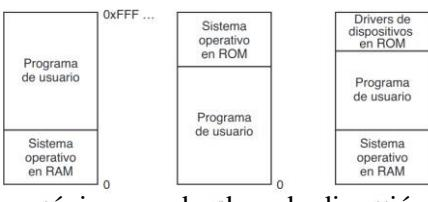
la memoria física, un conjunto de direcciones desde 0 hasta cierto valor máximo, en donde cada dirección correspondía a una celda que contenía cierto número de bits, comúnmente ocho.
Bajo estas condiciones, no era posible tener dos programas ejecutándose en memoria al mismo tiempo. Si el primer programa escribía un nuevo valor en, por ejemplo, la ubicación 2000, esto borraría cualquier valor que el segundo programa estuviera almacenando ahí. Ambos programas fallarían de inmediato.
No obstante, aun sin abstracción de memoria es posible ejecutar varios programas al mismo tiempo. Lo que el sistema operativo debe hacer es guardar todo el contenido de la memoria en un archivo en disco, para después traer y ejecutar el siguiente programa. Mientras sólo haya un programa a la vez en la memoria no hay conflictos.
Sin embargo, esta solución tenía una gran desventaja, que se ilustra en la figura 3.2. Como muestran las figuras 3.2(a) y (b), se tienen dos programas. Cuando los dos programas se cargan consecutivamente en la memoria, empezando en la dirección 0, tenemos la situación de la figura 3-2(c). Para este ejemplo, suponemos que el sistema operativo está en la parte alta de la memoria y no se muestra.
Hay dos formas de ejecutar múltiples programas sin abstracción de memoria.
- Intercambio: cada programa se carga en la totalidad de la memoria principal. Por tanto, cada vez que se cambia de programa se tiene que guardar todo el contenido de la memoria en el disco, y sustituirlo por el nuevo programa. Esto es muy costoso.
- Carga consecutiva: los programas se cargan enteros en la memoria, uno detrás de otro. Como consecuencia, las referencias a posiciones de memoria dejan de ser correctas, ya que se escribieron considerando que se disponía de la memoria entera. Para solucionar esto se usa la reubicación estática: cuando se carga un programa, se les suma a todas sus referencias a memoria la posición donde se cargó. Esto soluciona el problema, pero también hace mucho más lenta la carga de programas.
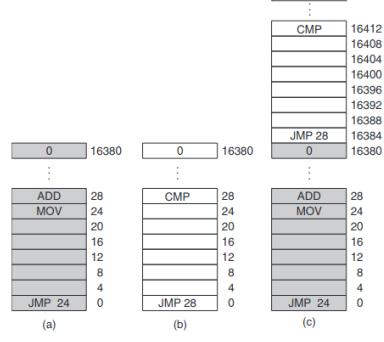
3.3. Abstracción de memoria: espacios de direcciones
3.3.1. La noción de un espacio de direcciones
Con todo, exponer la memoria física a los procesos tiene varias desventajas. En primer lugar, si los programas de usuario pueden direccionar cada byte de memoria, pueden estropear el sistema operativo con facilidad, ya sea intencional o accidentalmente, con lo cual el sistema se detendría en forma súbita. Este problema existe aun cuando sólo haya un programa de usuario (aplicación) en ejecución. En segundo lugar, con este modelo es difícil tener varios programas en ejecución a la vez.
Hay que resolver dos problemas para permitir que haya varias aplicaciones en memoria al mismo tiempo sin que interfieran entre sí: protección y reubicación. Una solución es inventar una nueva abstracción para la memoria: el espacio de direcciones. Un espacio de direcciones (address space) es el conjunto de direcciones que puede utilizar un proceso para direccionar la memoria. Cada proceso tiene su propio espacio de direcciones, independiente de los que pertenecen a otros procesos (excepto en ciertas circunstancias especiales en donde los procesos desean compartir sus espacios de direcciones).
Algo un poco difícil es proporcionar a cada programa su propio espacio de direcciones, de manera que la dirección 28 en un programa indique una ubicación física distinta de la dirección 28 en otro programa. La solución sencilla utiliza una versión muy simple de la reubicación dinámica. Lo que hace es asociar el espacio de direcciones de cada proceso sobre una parte distinta de la memoria física, de una manera simple. La solución clásica, es equipar cada CPU con dos registros de hardware especiales, conocidos comúnmente como los registros base y límite.
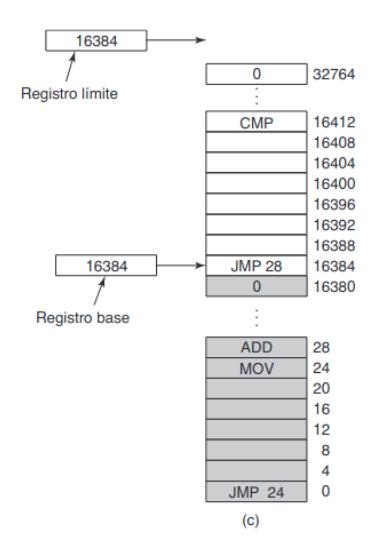
En cada referencia a memoria, el hardware suma el valor base a la dirección referencia, comprueba si el resultado está más allá del final del espacio (dirección base + límite). Si es así, genera un fallo y aborta el acceso.Como consecuencia, los accesos a memoria son máslentos, puesimplican una comprobación (rápida)
y una suma (lenta). Como mínimo, se accede a memoria una vez por ciclo, para realizar el fetch de la instrucción a ejecutar.
Este esquema funciona cuando la memoria física es lo suficientemente grande como para contener todos los procesos en ejecución en un momento dado. En la práctica, la memoria que requieren los procesos es mucho mayor que la memoria física disponible. Hay dos esquemas alternativos que solucionan esto: el intercambio y la memoria virtual.
3.3.2. Intercambio
Si la memoria física de la computadora es lo bastante grande como para contener todos los procesos, los esquemas descritos hasta ahora funcionarán en forma más o menos correcta. Pero en la práctica, la cantidad total de RAM que requieren todos los procesos es a menudo mucho mayor de lo que puede acomodarse en memoria. Para mantener todos los procesos en memoria todo el tiempo se requiere una gran cantidad de memoria y no puede hacerse si no hay memoria suficiente.
El intercambio, consiste en llevar cada proceso completo a memoria, ejecutarlo durante cierto tiempo y después regresarlo al disco. El mismo proceso podrá estar en distintos puntos del tiempo en distintas posiciones de memoria, por lo que se necesitará usar los registros para manejar las referencias a la memoria. Los procesos inactivos mayormente son almacenados en disco, de tal manera que no ocupan memoria cuando no se están ejecutando. El intercambio de procesos en memoria provoca que se vaya fragmentando, pues se van generando huecos demasiado pequeños para colocar un proceso en ellos.
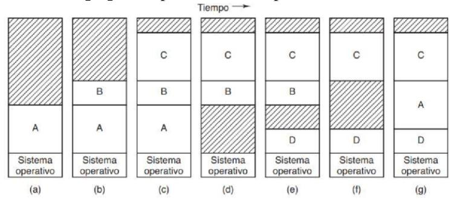
FIGURA 3.4. La asignación de la memoria cambia a medida que llegan procesos a la memoria y salen de esta. Las regiones sombreadas son la memoria sin usar.
Cuando la fragmentación es muy alta, se puede usar la compactación, que combina todos los huecos pequeños en un hueco grande desplazando procesos lo más abajo posible. Es un procedimiento muy lento. Un aspecto que vale la pena mencionar es la cantidad de memoria que debe asignarse a un proceso cuando éste se crea o se intercambia. Si los procesos se crean con un tamaño fijo que nunca cambia, entonces la asignación es sencilla: el sistema operativo asigna exactamente lo necesario, ni más ni menos.
No obstante, los procesos pueden crecer, por ejemplo, para acomodar su pila o aignar memoria dinamicamente en el heap, como en muchos lenguajes de programación, ocurre un problema cuando un proceso trata de crecer.
Si un proceso necesita crecer intentará:
- Ocupar huecos adyacentes
- Si no hay huevos adyacentes, se moverán a un hueco lo suficientemente grande
- Si no hay huecos lo suficientemente grandes, se intentará compactar la memoria para crear uno y se moverá allí.
- Si nada de esto funciona, el proceso se tendrá que suspender hasta que se libere la memoria suficiente.
Para evitar tener que hacer todo eso cada vez que un proceso necesite crecer, será conveniente asignar memoria en exceso cuando se carga o mueve uno en memoria. En los procesos con dos segmentos en crecimiento (pila y heap), estos pueden crecer en direcciones opuestas es en el espacio para el crecimiento hasta que ambos se encuentren. Si el espacio para crecimiento se agota, habrá que mover o suspender el proceso como antes.
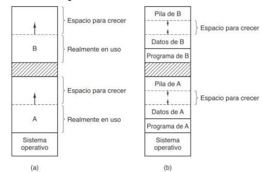
3.3.3. Administración de memoria libre
3.3.3.1. Administración de memoria con mapas de bits
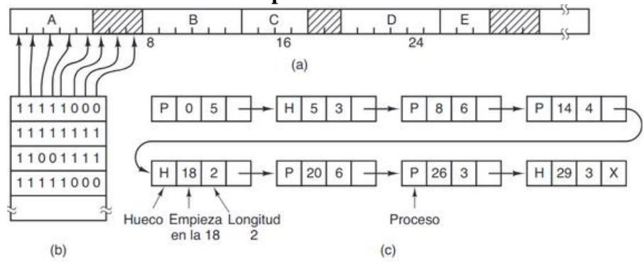
FIGURA 3.6. (a) Una parte de la memoria con cinco procesos y tres huecos. Las marcas de graduación muestran las unidades de asignación de memoria. Las regiones sombreadas (0 en el mapa de bits) están libre (b) El mapa de bits correspondiente. (c) La misma información en forma de lista.
La memoria se divide en unidades de asignación de un tamaño fijo. Para cada unidad de asignación en la memoria habrá un bit correspondiente en el mapa de bits, que será 0 si está libre y 1 si está ocupada. El tamaño del mapa será siempre constante pues depende del tamaño de la memoria y del de la unidad de asignación. (La unidad de asignación suele ser la unidad direccionable, explicó después lo que es la unidad direccionable por si hay lagunas de Fundamentos dos Computadores).
Una unidad de asignación pequeña implica un mapa de bits grande. Una unidad de asignación pequeña implica un mapa de bits más pequeño, pero se puede desperdiciar mucha memoria en la última unidad de cada proceso si su tamaño no es un múltiplo del tamaño de la unidad de asignación.
El principal problema es que cada vez que se lleva un proceso a memoria el administrador tendrá que recorrer el mapa de bits contando ceros hasta encontrar una secuencia de ceros, tan larga como el tamaño del proceso, lo cual es muy lento.
3.3.3.2. Administración de memoria con listas ligadas
La lista está formada por segmentos de memoria que o bien contienen un proceso o bien son un hueco. Cada entrada especificará si se trata de un proceso o un hueco, la dirección donde comienza, su longitud y un apuntados a la siguiente entrada. El tamaño de la lista no es constante, pues depende del número de
huecos y procesos que haya en la memoria de un determinado momento. La lista está ordenada por dirección de inicio. De esta manera, cuando un proceso regrese a disco se podrá actualizar muy fácilmente.
-
Si las dos entradas vecinas son procesos se marca el proceso intercambiado como hueco, sin más.
-
Si una de las entradas vecinas es un hueco, la entrada del proceso intercambiado se fusiona con la del hueco, crenado un hueco más grande.
Si las dos entradas vecinas son huecos, las tes entradas se fusionan, creando un hueco más grande. Fusionando los huecos, la memoria se fragmenta menos. Cuando los procesos y huecos se mantienen en una lista ordenada por dirección, se pueden utilizar varios algoritmos para asignar memoria a un proceso creado. El algoritmo más simple es el de primer ajuste: el administrador de memoria explora la lista de segmentos hasta encontrar un hueco que sea lo bastante grande. El algoritmo del primer ajuste es rápido debido a que busca lo menos posible.
Una pequeña variación del algoritmo del primer ajuste es el algoritmo del siguiente ajuste. Funciona de la misma manera que el primer ajuste, excepto porque lleva un registro de dónde se encuentra cada vez que descubre un hueco adecuado. La siguiente vez que es llamado para buscar un hueco, empieza a buscar en la lista desde el lugar en el que se quedó la última vez, en vez de empezar siempre desde el principio, como el algoritmo del primer ajuste. Las simulaciones realizadas muestran que el algoritmo del siguiente ajuste tiene un rendimiento ligeramente peor que el del primer ajuste.
Otro algoritmo muy conocido y ampliamente utilizado es el del mejor ajuste. Este algoritmo busca en toda la lista, de principio a fin y toma el hueco más pequeño que sea adecuado. En vez de dividir un gran hueco que podría necesitarse después, el algoritmo del mejor ajuste trata de buscar un hueco que esté cerca del tamaño actual necesario, que coincida mejor con la solicitud y los huecos disponibles.
El algoritmo del mejor ajuste es más lento que el del primer ajuste, ya que debe buscar en toda la lista cada vez que se le llama. De manera sorprendente, también provoca más desperdicio de memoria que los algoritmos del primer ajuste o del siguiente ajuste, debido a que tiende a llenar la memoria con huecos pequeños e inutilizables. El algoritmo del primer ajuste genera huecos más grandes en promedio.
Para resolver el problema de dividir las coincidencias casi exactas en un proceso y en un pequeño hueco, podríamos considerar el algoritmo del peor ajuste, es decir, tomar siempre el hueco más grande disponible, de manera que el nuevo hueco sea lo bastante grande como para ser útil. La simulación ha demostrado que el algoritmo del peor ajuste no es muy buena idea tampoco. Los cuatro algoritmos pueden ser acelerados manteniendo listas separadas para los procesos y los huecos. De esta forma, todos ellos dedican toda su energía a inspeccionar los huecos, no los procesos.
Si se mantienen distintas listas para los procesos y los huecos, la lista de huecos se puede mantener ordenada por el tamaño, para que el algoritmo del mejor ajuste sea más rápido. Cuando el algoritmo del mejor ajuste busca en una lista de huecos, del más pequeño al más grande, tan pronto como encuentre un hueco que ajuste, sabrá que el hueco es el más pequeño que se puede utilizar, de aquí que se le denomine el mejor ajuste. Tenemos inserción rápida, liberación lenta (los huecos adyacentes no se podrán fusionar directamente).
Un algoritmo de asignación más es el denominado de ajuste rápido, el cual mantiene listas separadas para algunos de los tamaños más comunes solicitados. Con el algoritmo del ajuste rápido, buscar un hueco del tamaño requerido es extremadamente rápido, pero tiene la misma desventaja que todos los esquemas que se ordenan por el tamaño del hueco: cuando un proceso termina o es intercambiado, buscar en sus vecinos para ver si es posible una fusión es un proceso costoso
3.4. Memoria virtual
Existe la necesidad de ejecutar programas que son demasiado grandes como para caber en la memoria y sin duda existe también la necesidad de tener sistemas que puedan soportar varios programas ejecutándose al mismo tiempo, cada uno de los cuales cabe en memoria, pero que en forma colectiva exceden el tamaño de esta. El intercambio no es una opción atractiva, ya que es lento. Por otro lado, el proceso de dividir programas grandes en partes modulares más pequeñas (llamadas overlays o sobrepuestos) consumía mucho tiempo, y era aburrido y propenso a errores.
La solución a esto se conoce como memoria virtual. La idea básica detrás de la memoria virtual es que cada programa tiene su propio espacio de direcciones, el cual se divide en trozos llamados páginas. Cada página es un rango contiguo de direcciones. Estas páginas se asocian a la memoria física, pero no todas tienen que estar en la memoria física para poder ejecutar el programa. Cuando el programa hace referencia a una parte de su espacio de direcciones que está en la memoria física, el hardware realiza la asociación necesaria al instante. Cuando el programa hace referencia a una parte de su espacio de direcciones que no está en la memoria física, el sistema operativo recibe una alerta para buscar la parte faltante y volver a ejecutar la instrucción que falló. La RAM actúa como una especie de caché.
Así como dato podemos tener una memoria virtual cuyo tamaño sea igual que el de la memoria física y sigue siendo necesaria por si usamos varios procesos. Incluso podría ser menor que el tamaño de la memoria física, desaprovechando hardware. Por norma general es mayor.
3.4.1. Paginación
Primero quiero recordar que la unidad direccionable es aquel conjunto de bits o bytes a los que accedemos en bloque así grosso modo. Si por ejemplo tenemos 2 direcciones y la unidad direccionable es el bit pues implica que cada dirección accede a 1 bit por lo que la memoria va a tener un tamaño de 2 . Por otro lado si la unidad direccionable fuese el byte cada una de las direcciones accede en bloque a un byte (8 bits) por lo que el tamaño de la memoria va a ser 2 ⋅ 8 . Por lo que se deduce la siguiente fórmula:
El espacio de direcciones de un proceso se divide en páginas, que son un rango contiguo de direcciones de 2− ( 2 2 ) unidades direccionables (bytes o palabras) . El tamaño del espacio de direcciones será de 2unidades direccionables, siendo n la longitud de palabra del sistema (el ancho de los registros del procesador). El espacio de direcciones se divide en 2páginas. Cada dirección del espacio de direcciones se divide en campo de página (p MSB) que indica a qué páginas pertenece y el campo de desplazamiento (n-p LSB) que indica a qué unidad direccionable de la página se refiere la dirección.
La memoria física se dividirá en marcos de página del mismo tamaño que las páginas del espacio de direcciones. El tamaño de la memoria física tendrá que ser, por lo tanto, un múltiplo del tamaño de página. La memoria física se divide en tamaño_total/tamaño_página marcos.
Las páginas se asignan a marcos de manera completamente asociativa, es decir, cualquier página de cualquier espacio de direcciones puede estar en cualquier marco. De esta manera, se provoca el mínimo número de fallo de página.
3.4.2. Tablas de páginas (TP)
En una implementación simple, la asociación de direcciones virtuales a direcciones físicas se puede resumir de la siguiente manera: la dirección virtual se divide en un número de página virtual (bits de mayor orden) y en un desplazamiento (bits de menor orden). Por ejemplo, con una dirección de 16 bits y un tamaño
de página de 4 KB, los 4 bits superiores podrían especificar una de las 16 páginas virtuales y los 12 bits inferiores podrían entonces especificar el desplazamiento de bytes (0 a 4095) dentro de la página seleccionada. Sin embargo, también es posible una división con 3, 5 u otro número de bits para la página. Las distintas divisiones implican diferentes tamaños de página.
El número de página virtual se utiliza como índice en la tabla de páginas para buscar la entrada para esa página virtual. En la entrada en la tabla de páginas, se encuentra el número de marco de página (si lo hay). El número del marco de página se adjunta al extremo de mayor orden del desplazamiento, reemplazando el número de página virtual, para formar una dirección física que se pueda enviar a la memoria.
Por ende, el propósito de la tabla de páginas es asociar páginas virtuales a los marcos de página. Hablando en sentido matemático, la tabla de páginas es una función donde el número de página virtual es un argumento y el número de marco físico es un resultado. Utilizando el resultado de esta función, el campo de la página virtual en una dirección virtual se puede reemplazar por un campo de marco de página, formando así una dirección de memoria física.
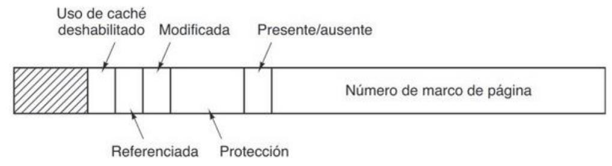
FIGURA 3.11. Una típica entrada en la tabla de páginas.
- Número de marco de página: indica a que marco está asociada esa página (si alguno quiere saber que se almcena cuando la pagina no está en memoria pregunte al profesor).
- Bit presente/ausente: si es 1, significa que la página está en memoria principal. Si es 0, no está en memoria principal.
- Bits de protección: (r,w,x) si uno es 1, la página tiene ese permiso. Si es 0 no lo tiene. Por tanto, no se deben mezclar datos e instrucciones en la misma página, pues eso implicaría activar todos sus bits de protección.
- Bit modificada: se pone a 1 cuando se escribe en la página. Se usa cuando se quita la página de memoria principal para determinar si habrá que copiar su contenido en el disco. Si se tiene que hacer, se copia la página entera, pues no se sabe dónde fue modificada.
- Bit referenciada: se pone a 1 cuando se referencia la página (para escritura o lectura). Se usa como apoyo al algoritmo de reemplazo, pues las páginas que no han sido usadas desde que se cargaron serán mejores candidatas para ser reemplazadas.
- Bit de deshabilitación de caché: si es 1, ninguna de las palabras de la página podrá almacenarse en la caché. Se usa en páginas compartidas o páginas donde se ejecutan operaciones de lectura y escritura de E/S Para mantener la coherencia de caché. Por ejemplo, si hay dos hilos de un proceso ejecutándose a la vez cada uno en un núcleo y uno de ellos pretende escribir en una página, la llevará a la caché de su núcleo. La modificación se almacenará en la caché y no será visible por el otro hilo hasta que esa línea de caché sea reemplazada.
Puede haber bastantes más bits para ayudar a los algoritmos de reemplazo. Normalmente, la dirección de disco usada para guardar la página cuando no está en memoria no se almacena en la tabla. Con esta información la MMU es capaz de realizar las traducciones.
El SO conoce la ubicación de las tablas gracias a unos registros. Estas tablas de páginas se almacenan en el kernel no en el espacio de usuario. Cuando se carga un proceso la tabla de páginas no genera fallo de página porque cuando se carga el proceso no se accede a ninguna dirección de memoria y por definición del Tanembaum, un fallo de página es una excepción que ocurre cuando un programa llama o salta a una instrucción que no está cargada en memoria, y para llamar a una instruccion primero hay que cargar el programa. Además sabemos que al cargar el proceso tambien se carga su tabla de páginas por lo que está no genera fallo de páginas (suponiendo que ocupe solo una página la tabla).
3.4.3. Traducción de dirección virtual a dirección física
Cuando se utiliza memoria virtual, las direcciones virtuales no van directamente al bus de memoria. En vez de ello, van a una MMU (Memory Managemente Unit, Unidad de administración de memoria) que asocia las direcciones virtuales a las direcciones de memoria físicas.
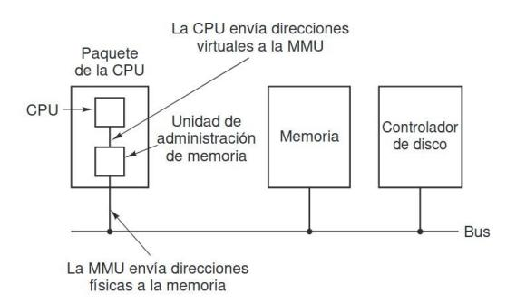
La MMU comprueba la tabla de páginas, usando los números de página virtuales como índices de la tabla. Si el bit de presente/ausente es 1 la MMU cambia el campo de página de la dirección virtual por el número de marco asociado a ella, el campo de desplazamiento se mantiene idéntico y se coloca la dirección obtenida en el bus de memoria.
Si el bit de presente/ausente es 0 se bloquea el proceso, se busca y copia la dirección buscada del disco a la memoria principal y si la memoria
principal está llena, habrá que reemplazar alguna de sus páginas.
Siempre que se produce un fallo de página se genera una e x c e p c i ó n ( q u e s i r e c o r d a m o s e s u n t r a p a m o d o k e r n e l ) , y el proceso correspondiente se bloquea a la espera de que se gestione el fallo de página y la interrupción para poder retomar su ejecución.
Por otra parte, la MMU también gestiona el acceso a memoria mediante la verificación de los permisos de acceso de los procesos a las direcciones de memoria solicitadas, aumentando la seguridad e impidiendo que accedan a zonas de memoria que no tienen autorizadas.
En la figura 3.9 se muestra un ejemplo muy simple de cómo funciona esta asociación. En este ejemplo, tenemos una computadora que genera direcciones de 16 bits, desde 0 hasta 64 K. Éstas son las direcciones virtuales. Sin embargo, esta computadora sólo tiene 32 KB de memoria física. Así, aunque se pueden escribir programas de 64 KB, no se pueden cargar completos en memoria y ejecutarse. No obstante, una copia completa de la imagen básica de un programa, de hasta 64 KB, debe estar presente en el disco para que las partes se puedan traer a la memoria según sea necesario. En este ejemplo son de 4 KB, pero en sistemas reales se han utilizado tamaños de página desde 512 bytes hasta 64 KB. Con 64 KB de espacio de direcciones virtuales y 32 KB de memoria física obtenemos 16 páginas virtuales y 8 marcos de página.
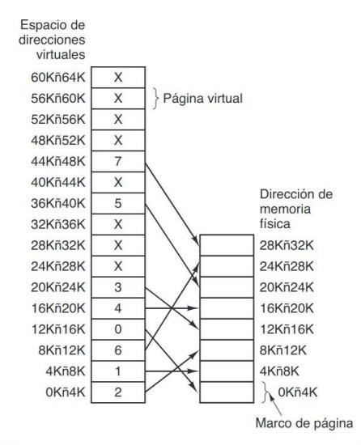
Cada página contiene exactamente 4096 direcciones que empiezan en un múltiplo de 4096 y terminan uno antes del múltiplo de 4096. Por ejemplo, cuando el programa trata de acceder a la dirección 0 usando la instrucción
MOV REG,0
la dirección virtual 0 se envía a la MMU. La MMU ve que esta dirección virtual está en la página 0 (0 a 4095), que de acuerdo con su asociación es el marco de página 2 (8192 a 12287). De manera similar, la instrucción
MOV REG,8192
se transforma efectivamente en
MOV REG,24576
debido a que la dirección virtual 8192 (en la página virtual 2) se asocia con la dirección 24576 (en el marco de página físico 6). Como tercer ejemplo, la dirección virtual 20500 está a 20 bytes del inicio de la página virtual 5 (direcciones virtuales 20480 a 24575) y la asocia con la dirección física 12288 + 20 = 12308.
Como sólo tenemos ocho marcos de página físicos, sólo ocho de las páginas virtuales en la figura 3.9 se asocian a la memoria física. Las demás, que se muestran con una cruz en la figura, no están asociadas. En el hardware real, un bit de presente/ausente lleva el registro de cuáles páginas están físicamente presentes en la memoria. ¿Qué ocurre si el programa hace referencia a direcciones no asociadas, por ejemplo, mediante el uso de la instrucción
MOV REG,32780
que es el byte 12 dentro de la página virtual 8 (empezando en 32768)? La MMU detecta que la página no está asociada (lo cual se indica mediante una cruz en la figura) y hace que la CPU haga un trap al sistema operativo (esto es porque es una excepción y una excepción es un trap). El SO selecciona una página que desalojar para meter una nueva, guardándola en el disco y trallendo la nueva. Después reanuda la isntrucción que causó el fallo.
Por ejemplo, si el sistema operativo decidiera desalojar el marco de página 1, cargaría la página virtual 8 en la dirección física 8192 y realizaría dos cambios en la asociación de la MMU. Primero, marcaría la entrada de la página virtual 1 como no asociada, para hacer un trap por cualquier acceso a las direcciones virtuales entre 4096 y 8191. Después reemplazaría la cruz en la entrada de la página virtual 8 con un 1, de manera que al ejecutar la instrucción que originó el trap, asocie la dirección virtual 32780 a la dirección física 4108 (4096 + 12).
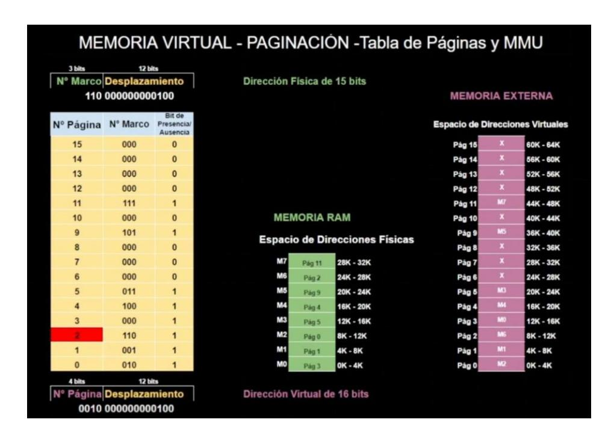
12 bits. Con 4 bits para el número de página, podemos tener 16 páginas y con los 12 bits para el desplazamiento, podemos direccionar todos los 4096 bytes dentro de una página.
Por si pregunta de forma explícita se usa un tamaño con potencia de 2. Se hace porque tenemos direcciones virtuales de 16, 32, 64 bytes. Las cuales la MMU va a dividir. Pongamos el ejemplo de tener direcciones virtuales de 16 bits, y 4 bits son para indicar el número de página, los 12 bits restantes son para el offset de la dirección y nos permiten direccionar 2¹² = 4096 bytes, que para sorpresa de nadie es potencia entera de 2.
Basta con usar un contraejemplo, imaginemos que tenemos páginas de 4097 bytes, siempre nos va a quedar un byte sin poder direccionar. Y si lo
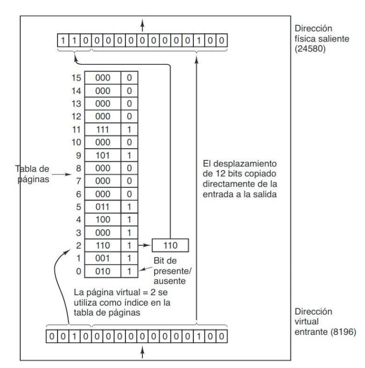
queremos direccionar el número de páginas se va a reducir a la mitad y además habrá un hueco gigante de direcciones que no van a ser referenciadas.
3.4.4. Aceleración de la paginación
En cualquier sistema de paginación hay que abordar dos cuestiones principales:
-
- La asociación de una dirección virtual a una dirección física debe ser rápida.
-
- Si el espacio de direcciones virtuales es grande, la tabla de páginas será grande.
El primer punto es una consecuencia del hecho de que la asociación virtual-a-física debe realizarse en cada referencia de memoria. Todas las instrucciones deben provenir finalmente de la memoria y muchas de ellas hacen referencias a operandos en memoria también. En consecuencia, es necesario hacer una, dos o algunas veces más referencias a la tabla de páginas por instrucción.
El segundo punto se deriva del hecho de que todas las computadoras modernas utilizan direcciones virtuales de por lo menos 32 bits, donde 64 bits se vuelven cada vez más comunes. Por decir, con un tamaño de página de 4 KB, un espacio de direcciones de 32 bits tiene 1 millón de páginas y un espacio de direcciones de 64 bits tiene más de las que desearíamos contemplar. Con 1 millón de páginas en el espacio de direcciones virtual, la tabla de páginas debe tener 1 millón de entradas. Las tablas de páginas normales (ni multinivel ni invertidas) tienen tantas entradas como páginas. Para el tamaño de una TP basta con calcular el número de entradas de esta tabla y lo que ocupa cada entrada.
Tenemos 2 opciones para tratar las TPS:
- Mantener una única TP como un conjunto de registros hardware, uno para cada página. Cuando se inicia un proceso, el SO carga los registros con la tabla de páginas del proceso almacenada en memoria principal. Esto es muy simple, no requiere acceder a memoria principal durante la traducción. Sin embargo, es muy caro si las tablas de páginas son grandes y las conmutaciones de procesos serán más lentas que implicarán la carga de su TP en los registros
- Mantener una TP por proceso en la memoria principal. Esto es lo que se hace enla mayoría de sistemas modernos. Para realizar una traducción sólo se necesita un registro que apunte el inicio de la TP del proceso en ejecución. Las conmutaciones de procesos sólo implican cargar una dirección en un registro. Sin embargo, se requiere acceder a memoria principal para leer la TP cada vez que se tenga que traducir una dirección.
3.4.4.1. Búfer de traducción adelantada
Con la paginación se requiere al menos una referencia adicional a memoria para acceder a la tabla de páginas. Como la velocidad de ejecución está comúnmente limitada por la proporción a la que la CPU puede obtener instrucciones y datos de la memoria, al tener que hacer dos referencias a memoria por cada una de ellas se reduce el rendimiento a la mitad. Bajo estas condiciones, nadie utilizaría la paginación. Basicamente cada vez que queremos ver una dirección implica un acceso a memoria a mayores para ver la tabla de páginas.
| Válida | Página virtual | Modificada | Protección | Marco de página |
|---|---|---|---|---|
| 1 | 140 | 1 | RW | 31 |
| 1 | 20 | 0 | RX | 38 |
| 1 | 130 | 1 | RW | 29 |
| 1 | 129 | 1 | RW | 62 |
| 1 | 19 | 0 | RX | 50 |
| 1 | 21 | 0 | RX | 45 |
| 1 | 860 | 1 | RW | 14 |
| 1 | 861 | 1 | RW | 75 |
La solución que se ha ideado es equipar a las computadoras con un pequeño dispositivo de hardware para asociar direcciones virtuales a direcciones físicas sin pasar por la tabla de páginas. El dispositivo se llama TLB (Translation Lookaside Buffer, Búfer de traducción adelantada) o algunas veces memoria asociativa. Por lo general se encuentra dentro de la MMU y consiste en un pequeño número de entradas, ocho en este ejemplo, pero raras veces más de 64.
Cuando se presenta una dirección virtual a la MMU para que la traduzca, el hardware primero comprueba si su número de página virtual está presente en el TLB al compararla con todas las entradas en forma simultánea (es decir, en paralelo mediante comparadores en cada entrada del TLB). Si se encuentra el número de página en la TLB y el bit de validez es 1, se toma el número de página en la TLB sin pasar por la tabla de páginas. Así nos ahorramos un acceso a memoria
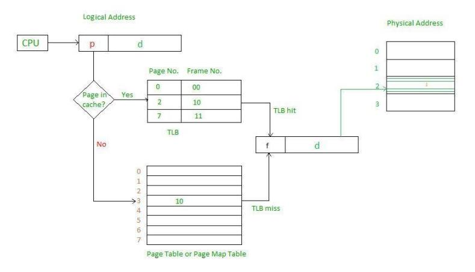
Si no se encuentra el número de página en el TLB, la MMU busca el número de página en la TP, se copia la entrada de la TP en el TLB, si el TLB está lleno hay que reemplazar alguna de sus entradas. Si el bit de modificado de la entrada desalojada es 1, se establece el bit modificado de la entrada a la TP a 1 también (el algoritmo que usa es desconocido, preguntadle al profesor).
Puede no estar en el TLB, pero si en memoria, por lo que un fallo TLB no siempre implica traer una página de memoria secundaria
Ahora hay máquinas que gestionan el TLB mediante software en el Sistema Operativo, en vez de usar la MMU del procesador, el Sistema Operativo es el que gestiona esto todo. Cuando no se encuentra una coincidencia en el TLB, en vez de que la MMU vaya a las tablas de páginas para buscar y obtener la referencia a la página que se necesita, sólo genera un fallo del TLB (excepción) y pasa el problema al sistema operativo. El sistema debe buscar la página, eliminar una entrada del TLB, introducir la nueva página y reiniciar la instrucción que originó el fallo. Y, desde luego, todo esto se debe realizar en unas cuantas instrucciones, ya que los fallos del TLB ocurren con mucha mayor frecuencia que los fallos de página. Además, reduce el número de fallos.
Esto ayuda a que la MMU sea más simple, y que el chip de la CPU tenga más espacio para implementar cachés y otras características que mejoren el rendimiento. Los fallos de TLB son mucho más frecuentes que los fallos de página.
La forma normal de procesar un fallo del TLB, ya sea en hardware o en software, es ir a la tabla de páginas y realizar las operaciones de indexado para localizar la página referenciada. El problema al realizar esta búsqueda en software es que las páginas que contienen la tabla de páginas tal vez no estén en el TLB, lo cual producirá fallos adicionales en el TLB durante el procesamiento.
Estos fallos se pueden reducir al mantener una caché grande en software (por ejemplo, de 4 KB) de entradas en el TLB en una ubicación fija, cuya página siempre se mantenga en el TLB. Al comprobar primero la caché de software, el sistema operativo puede reducir de manera substancial los fallos del TLB.
Cuando se utiliza la administración del TLB mediante software, es esencial comprender la diferencia entre los dos tipos de fallos. Un fallo suave ocurre cuando la página referenciada no está en el TLB, sino en memoria. Todo lo que se necesita aquí es que el TLB se actualice. No se necesita E/S de disco. Por lo general, un fallo suave requiere de 10 a 20 instrucciones de máquina y se puede completar en unos cuantos nanosegundos. Por el contrario, un fallo duro ocurre cuando la misma página no está en memoria (y desde luego, tampoco en el TLB). Se requiere un acceso al disco para traer la página, lo cual tarda varios milisegundos. Un fallo duro es en definitiva un millón de veces más lento que un fallo suave.
3.4.4.2. Tablas de páginas multinivel
Como primer método, considere el uso de una tabla de páginas multinivel. En la figura 3.13 se muestra un ejemplo simple. En la figura 3.13(a) tenemos una dirección virtual de 32 bits que se particiona en un campo TP1 de 10 bits, un campo TP2 de 10 bits y un campo Desplazamiento de 12 bits. Como los desplazamientos son de 12 bits, las páginas son de 4 KB y hay un total de 220.
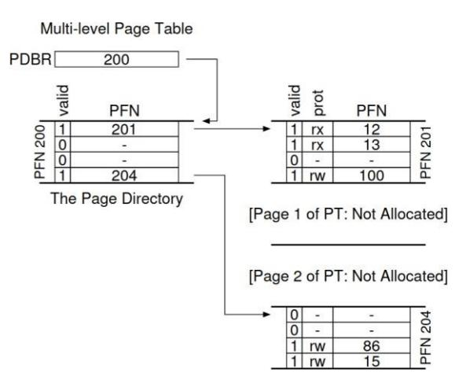
El secreto del método de la tabla de páginas multinivel es evitar mantenerlas en memoria todo el tiempo, y en especial, aquellas que no se necesitan. Por ejemplo, suponga que un proceso necesita 12 megabytes: los 4 megabytes inferiores de memoria para el texto del programa, lo siguientes 4 megabytes para datos y los 4 megabytes superiores para la pila. Entre la parte superior de los datos y la parte inferior de la pila hay un hueco gigantesco que no se utiliza.
Si recordamos, cargar la tabla de páginas no genera fallo de página, sin embargo, cargar las tablas de páginas de niveles inferiores sí que genera fallos de página (en los enunciados por norma general os va a decir que las tablas de páginas de niveles inferiores ocupan exactamente lo mismo que una página). Además cada proceso tiene su propio conjunto de tablas de páginas formado por su TP1, TP2s y TP3s.
En la figura 3.13(b) podemos ver cómo funciona la tabla de página de dos niveles en este ejemplo. A la izquierda tenemos la tabla de páginas de nivel superior, con 1024 entradas, que corresponden al campo TP1 de 10 bits. Cuando se presenta una dirección virtual a la MMU, primero extrae el campo TP1 y utiliza este valor como índice en la tabla de páginas de nivel superior. Cada una de estas 1024 entradas representa 4 M, debido a que todo el espacio de direcciones virtuales de 4 gigabytes (es decir, de 32 bits) se ha dividido en trozos de 4096 bytes.
La entrada que se localiza al indexar en la tabla de páginas de nivel superior produce la dirección (o número de marco de página) de una tabla de páginas de segundo nivel. La entrada 0 de la tabla de páginas de nivel superior apunta a la tabla de páginas para el texto del programa, la entrada 1 apunta a la tabla de páginas para los datos y la entrada 1023 apunta a la tabla de páginas para la pila. Las otras entradas (sombreadas) no se utilizan. Ahora el campo TP2 se utiliza como índice en la tabla de páginas de segundo nivel seleccionada para buscar el número de marco de página para esta página en sí.
Como ejemplo, considere la dirección virtual de 32 bits 0x00403004 (4,206,596 decimal), que se encuentra 12,292 bytes dentro de los datos. Esta dirección virtual corresponde a TP1 = 1, TP2 = 3 y Desplazamiento = 4. La MMU utiliza primero a TP1 para indexar en la tabla de páginas de nivel superior y obtener la entrada 1, que corresponde a las direcciones de 4M a 8M. Después utiliza PT2 para indexar en la tabla de páginas de segundo nivel que acaba de encontrar y extrae la entrada 3, que corresponde a las direcciones de 12288 a 16383 dentro de su trozo de 4M (es decir, las direcciones absolutas de 4,206,592 a 4,210,687). Esta entrada contiene el número de marco de la página que contiene la dirección virtual 0x00403004. Si esa página no está en la memoria, el bit de presente/ausente en la entrada de la tabla de páginas será cero, con lo cual se producirá un fallo de página. Si la página está en la memoria, el número del marco de página que se obtiene de la tabla de páginas de segundo nivelse combina con el desplazamiento (4) para construir la dirección física. Esta dirección se coloca en el bus y se envía a la memoria.
El sistema de tablas de páginas de dos niveles de la figura 3.13 se puede expandir a tres, cuatro o más niveles. Entre más niveles se obtiene una mayor flexibilidad, pero es improbable que la complejidad adicional sea de utilidad por encima de tres niveles.
Resumiendo, cada vez que se le presenta una dirección virtual a la MMU para que la traduzca:
- Se lee el campo de TP1 de la dirección.
- Se comprueba en la entrada correspondiente de la TP1 si la TP2 está en memoria.
- Si la TP2 correspondiente no está en memoria, se trae del disco como si fuera una página normal.
- Si la TP2 correspondiente sí que está en memoria se lee el campo TP2 de la dirección, se comprueba la entrada correspondiente de la TP2 si la página está en memoria y se procede con normalidad.
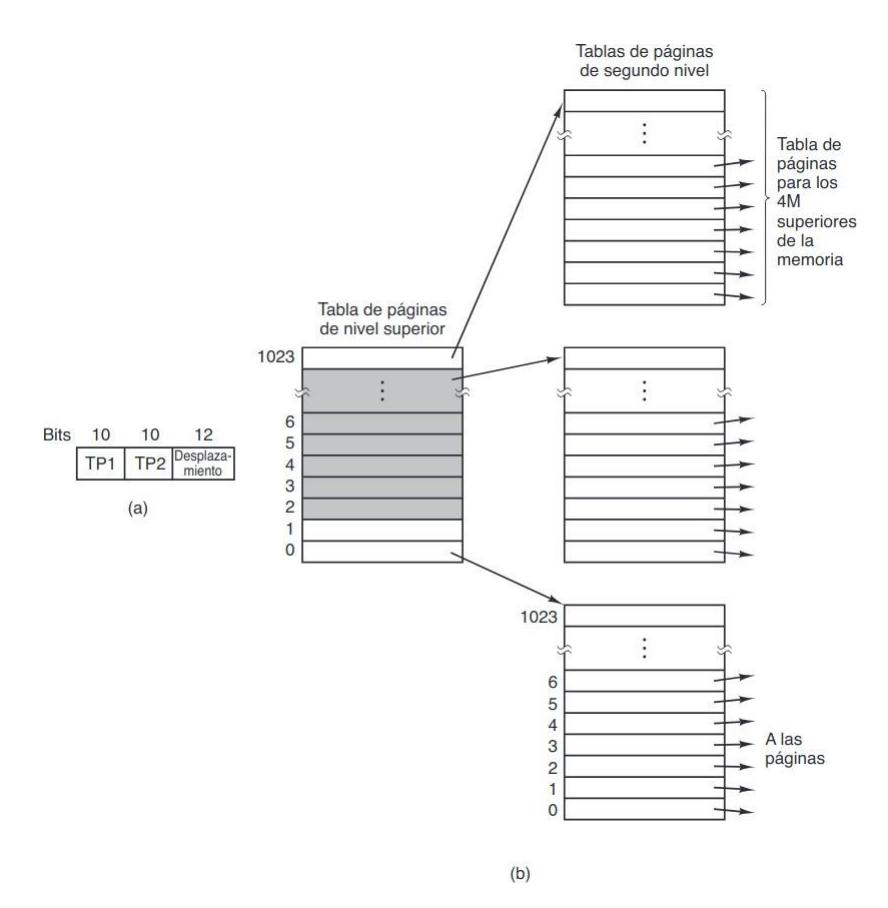
FIGURA 3.13. (a) Una dirección de 32 bits con dos campos de tablas de páginas. (b) Tablas de páginas de dos niveles.
3.4.4.3. Tablas de páginas invertidas
Es única para todo el sistema y siempre está en memoria.
Para los espacios de direcciones virtuales de 32 bits, la tabla de páginas multinivel funciona bastante bien. Sin embargo, a medida que las computadoras de 64 bits se hacen más comunes, la situación cambia de manera drástica. Si el espacio de direcciones es de 2⁶⁴ bytes, con páginas de 4 KB, necesitamos una tabla de páginas con 2⁵² entradas. Si cada entrada es de 8 bytes, la tabla es de más de 30 millones de gigabyes (30 PB). Ocupar 30 millones de gigabytessólo para la tabla de páginas no es una buena idea por ahora y probablemente tampoco lo sea para el próximo año,se necesita una solución diferente para los espacios de direcciones virtuales paginados de 64 bits.
Una de esas soluciones es la tabla de páginas invertida. En este diseño hay una entrada por cada marco de página en la memoria real, en vez de tener una entrada por página de espacio de direcciones virtuales. Por ejemplo, con direcciones virtuales de 64 bits, una página de 4 KB y 1 GB de RAM, una tabla de páginas invertida sólo requiere 262,144 entradas. La entrada lleva el registro de quién (proceso, página virtual) se encuentra en el marco de página.
Aunque las tablas de página invertidas ahorran grandes cantidades de espacio, tienen una seria desventaja: la traducción de dirección virtual a dirección física se hace mucho más difícil. Cuando el proceso n hace referencia a la página virtual p, el hardware ya no puede buscar la página física usando p como índice en la tabla de páginas. En vez de ello, debe buscar una entrada (n, p) en toda la tabla de páginas invertida. La forma de salir de este dilema es utilizar el TLB. Si el TLB puede contener todas las páginas de uso frecuente, la traducción puede ocurrir con igual rapidez que con las tablas de páginas regulares. Sin embargo, en un fallo de TLB la tabla de páginas invertida tiene que buscarse mediante software. Una manera factible de realizar esta búsqueda es tener una tabla de hash arreglada según el hash de la dirección virtual. Todas las páginas virtuales que se encuentren en memoria y tengan el mismo valor de hash se encadenan en conjunto.
Pregunta muy típica del profesor en exámenes sobre si ocupan mas las TP normales o las invertidas, y como todo en la asignatura se reponde con un "depende" o "por norma general".
De esto se deduce que para darse esta situación el tamaño de la memoria física y la virtual deben ser iguales. Después por ejemplo siempre tiene otra mítica sobre una RAM de 12 Gb o algo así, y claro lo más normal es tener una RAM multiplo de 2, creo que la respuesta correcta es decir que no es un tamaño habitual pero que sí que es usable.
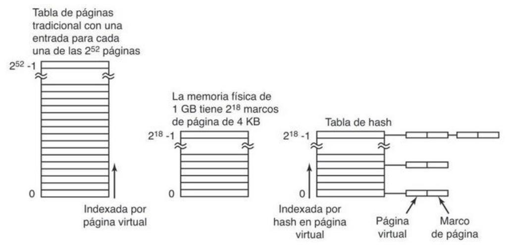
FIGURA 3.14. Comparación de una tabla de páginas tradicional con una tabla de páginas invertida.
3.5. Algoritmos de reemplazo de páginas
Cuando ocurre un fallo de página y la memoria principal está llena, se usará un ALGORITMO DE REEMPLAZO para decidir qué página se desalojará para cargar la nueva en el marco que ocupaba.
Interesa no eliminar una página de uso frecuente, pues seguramente se referenciará otra vez rápidamente y habrá que volver a cargarla desde disco, lo cual es una operación muy lenta.
Existen dos tipos de algoritmos de reemplazo:
- Algoritmos locales → siempre seleccionarán una página del mismo proceso que la que se está intentando cargar.
- Algoritmos globales → pueden seleccionar una página de cualquier proceso.
El problema del reemplazo de páginas aparece también en otras áreas del diseño computacional como las memorias caché y los servidores web. En las memorias caché, la escala temporal del problema será mucho menor ya que sus fallos se resuelven en memoria principal, que es mucho más rápida que el disco.
3.5.1. El algoritmo de reemplazo de páginas óptimo
Selecciona la página que se vaya a referenciar más tarde con objeto de posponer el fallo de página lo máximo posible.
Es imposible de implementar, pues el SO no tiene manera de saber cuándo será la próxima referencia a cada página. Se puede implementar en un simulador en la segunda corrida utilizando la información de referencia de páginas recolectada durante la primera.
Se usa como referencia, comparándolo con otros algoritmos que sí son implementables para averiguar su rendimiento.
3.5.2 No Usadas Recientemente
Para permitir que el sistema operativo recolecte estadísticas útiles sobre el uso de páginas, la mayor parte de las computadoras con memoria virtual tienen dos bits de estado asociados a cada página. R se establece cada vez que se hace referencia a la página (lectura o escritura); M se establece cuando se escribe en la página (es decir, se modifica). Los bits están contenidos en cada entrada de la tabla de páginas. Es importante tener en cuenta que estos bits se deben actualizar en cada referencia a la memoria, por lo que es imprescindible que se establezcan mediante el hardware. Una vez que se establece un bit en 1, permanece así hasta que el sistema operativo lo restablece. El bit R se borra en forma periódica (en cada interrupción de reloj) para diferenciar las páginas a las que no se ha hecho referencia recientemente de las que si se han referenciado.
Cuando ocurre un fallo de página, el sistema operativo inspecciona todas las páginas del proceso y las divide en 4 categorías con base en los valores actuales de sus bits R y M:
Clase 0: no ha sido referenciada, no ha sido modificada.
Clase 1: no ha sido referenciada, ha sido modificada.
Clase 2: ha sido referenciada, no ha sido modificada.
Clase 3: ha sido referenciada, ha sido modificada.
Aunque las páginas de la clase 1 parecen a primera instancia imposibles, ocurren cuando una interrupción de reloj borra el bit R de una página de la clase 3. Las interrupciones de reloj no borran el bit M debido a que esta información se necesita para saber si la página se ha vuelto a escribir en el disco o no. Al borrar R pero no M se obtiene una página de clase 1.
Se puede tener una página cargada aunque no haya sido referenciada, lo que cuenta para ver si se produce un fallo o no es el bit de válidez.
El algoritmo NRU (Not Recently Used, No usada recientemente) elimina una página al azar de la clase de menor numeración que no esté vacía. En este algoritmo está implícita la idea de que es mejor eliminar una página modificada a la que no se haya hecho referencia en al menos un pulso de reloj que una página limpia de uso frecuente. La principal atracción del NRU es que es fácil de comprender, moderadamente eficiente de implementar y proporciona un rendimiento que, aunque no es óptimo, puede ser adecuado.
3.5.3. Primera en Entrar, Primera en Salir (FIFO)
Otro algoritmo de paginación con baja sobrecarga es el de Primera en entrar, primera en salir (First-In, First-Out, FIFO). El sistema operativo mantiene una lista de todas las páginas actualmente en memoria, en donde la llegada más reciente está en la parte final y la menos reciente en la parte frontal. En un fallo de página, se elimina la página que está en la parte frontal y la nueva página se agrega a la parte final de la lista. Se podría reemplazar una página de uso frecuente, por esta razón es raro que se utilice FIFO en su forma pura.
3.5.4. Segunda oportunidad
Una modificación simple al algoritmo FIFO que evita el problema de descartar una página de uso frecuente es inspeccionar el bit R de la página más antigua. Si es 0, la página es antigua y no se ha utilizado, por lo que se sustituye de inmediato. Si el bit R es 1, el bit se borra, la página se pone al final de la lista de páginas y su t iempo de carga se actualiza, como si acabara de llegar a la memoria. Después la búsqueda continúa. Este algoritmo se conoce como segunda oportunidad.
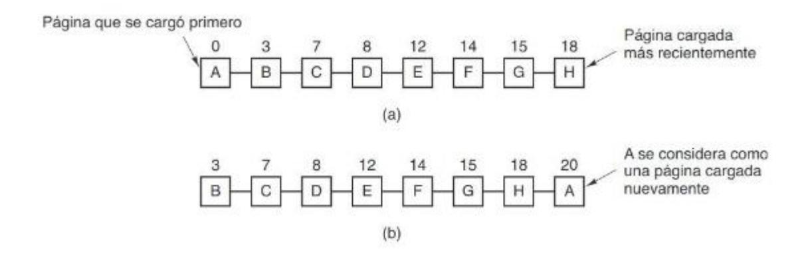
3.5.5. Reloj
Aunque el algoritmo segunda oportunidad es razonable, también es innecesariamente ineficiente debido a que está moviendo constantemente páginas en su lista. Un mejor método sería mantener todos los marcos de página en una lista circular en forma de reloj. La manecilla apunta a la página más antigua.
- Si = 0 → se selecciona, se inserta la nueva página en su lugar y se avanza la manecilla una posición.
- Si = 1 → se restablece y se avanza la manecilla una posición.
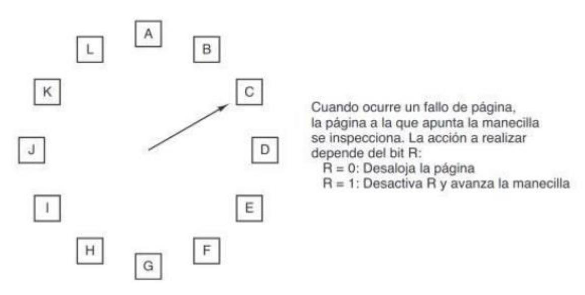
3.5.6. Menos Usadas Recientemente
Se basa en el principio de localidad temporal, seleccionando la página que lleve más tiempo sin ser referenciada. Tiene varias posibles implementaciones.
Implementación por software:
- Se crea una lista de páginas en memoria donde la última que ha sido usada estará al principio y la que más lleve sin usarse estará al final.
- En cada referencia la página referenciada se mueve al frente de la lista.
- La página a seleccionar será la primera de la lista.
- Es una implementación muy cara, pues en cada referencia hay que buscar la página en la lista, eliminarla y después pasarla al frente.
Implementación por hardware sencilla:
- Se crea un contador que se incrementa después de cada instrucción.
- En cada referencia el valor actual de se almacena en la entrada de la TP de la página referenciada.
- La página a seleccionar será aquella con menor valor de .
Implementación por hardware sofisticada:
- Se crea una matriz × inicializada a 0, donde es el número de marcos de la memoria principal.
- En cada referencia se establecen todos los bits de la fila correspondiente a la página referenciada a 1 y todos los de la columna a 0.
- La página a seleccionar será aquella con el menor valor binario almacenado en su fila.
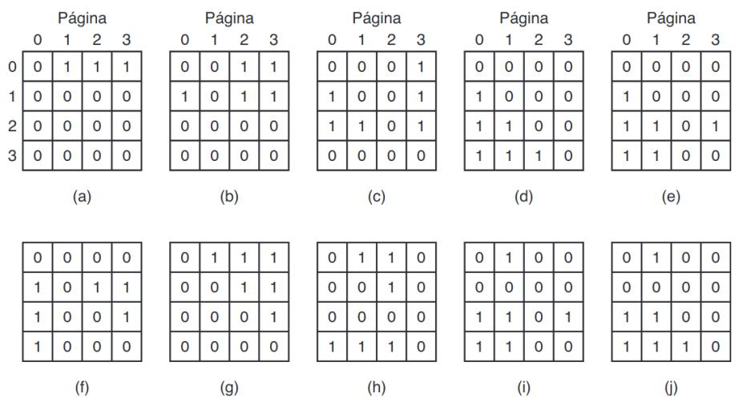
FIGURA 3.17. LRU usando una matriz cuando se hace referencia a las páginas en el orden 0, 1, 2, 3, 2, 1, 0, 3, 2, 3.
3.5.7. No Usadas Frecuentemente (NFU)
Es una variante del LRU que sí se puede implementar en software.
Se basa en asignar a cada página un contador (iniciado a 0) de manera que en cada interrupción de reloj el SO explora todas las páginas en memoria y le suma a su contador el valor de su bit antes de restablecerlo. Así, los contadores llevan una cuenta aproximada de la frecuencia con la que se usa cada página.
Su principal problema es que no tiene en cuenta el tiempo que lleva sin ser utilizada cada página, sólo cuántas veces se ha usado. Entonces, páginas antiguas que se usaron hace mucho tiempo y ya no se necesitan más tendrán privilegios sobre páginas nuevas que aún no tuvieron tiempo de ser usadas pero que la CPU necesita.
Envejecimiento: cuando llega una interrupción de reloj, cada contador se desplaza hacia la derecha y se le agrega el bit R a la izquierda. Se selecciona la página de menor contador.
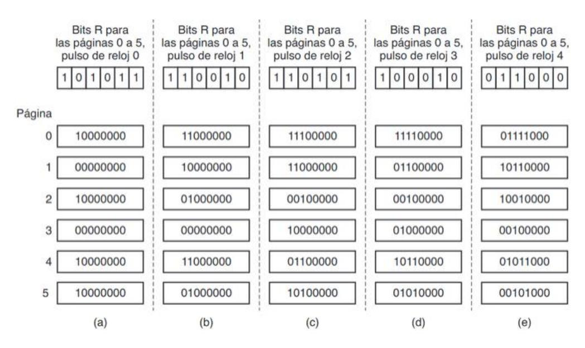
FIGURA 3.18. El algoritmo de envejecimiento simula el LRU en software. Aquí se muestran seis páginas para cinco pulsos de reloj. Los cinco pulsos de reloj se representan mediante los incisos (a) a (e).
El working set es el conjunto de páginas a las que accede y utiliza un proceso en un momento dado. A más se cumpla el principio de localidad temporal (visto en Fundamentos de Computadores) en su ejecución, menor será el tamaño del Working Set al estar los datos disponibles de forma más compacta y necesitar por tanto un menor número de páginas. Si se cumple más el principio de localidad espacial, al traer más páginas a memoria principal cercanas a las anteriormente utilizadas, el working set aumentará de tamaño
En los algoritmos explicados antes se usa paginación bajo demanda, es decir, las páginas se cargan según las va pidiendo la CPU, no por adelantado.
Sin embargo, sabemos que la mayoría de procesos cumplen el principio de localidad espacial (o de referencia), que asegura que referencian una pequeña fracción de sus páginas. Esta propiedad se puede aprovechar con el concepto del CONJUNTO DE TRABAJO (WS), que es el conjunto de páginas que referencia un proceso en un momento dado.
- Si todo el WS de un proceso está en memoria → se ejecutará sin producir muchos fallos de página.
- Si no todo el WS de un proceso está en memoria → producirá fallos de página cada pocas instrucciones (estará sobrepaginando, teniendo muchos fallos de página), así que se ejecutará muy lentamente. La sobrepaginación sucede cuando el WS no cabe en memoria principal, bien porque esta es muy pequeña o porque el proceso referencia muchas páginas distintas.
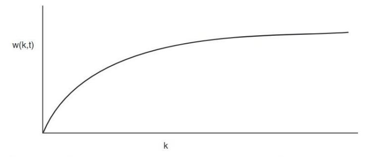
Definimos el (, ) de un proceso en el instante como el conjunto de páginas utilizadas en sus últimas referencias. Su límite conforme avanza con un dado es finito, pues un proceso no puede referenciar más páginas que las que hay en su espacio de direcciones.
Entonces, cada vez que el SO traiga un proceso a memoria para ejecutarlo, este producirá fallos de página hasta que se haya cargado su WS, desperdiciando tiempo de CPU. Para evitar este desperdicio se usa el MODELO DEL CONJUNTO DE TRABAJO, que consiste en asegurarse de que el WS de un proceso esté en memoria antes de comenzar a ejecutarlo.
- Se usa la prepaginación, se cargan las páginas del WS del proceso en memoria antes de empezar a ejecutarlo, es decir, antes de que las solicite la CPU.
- El algoritmo de reemplazo seleccionará las páginas que no se encuentran en el WS del proceso.
Para poder implementar este modelo, el SO necesitará conocer el WS que tiene cada proceso en todo momento. Una implementación que mantenga la definición de (, ) de manera estricta es inviable, pues implica actualizarlo en cada referencia a memoria. Se podría usar un registro de desplazamiento de longitud que se corresponda con el (, ) del proceso. En cada referencia a memoria se desplaza una posición a la izquierda e inserta el número de la página referenciada a la derecha. Sin embargo, para hacer esto habría que recorrerlo, quitar todas las páginas duplicadas y ordenarlas otra vez en cada referencia, lo que sería muy costoso.
En su lugar, se usa una aproximación del modelo en la que se redefine el WS como el conjunto de páginas utilizadas durante los últimos segundos de tiempo virtual (tiempo de ejecución) del proceso.
El algoritmo de reemplazo basado en WS, como se dijo antes, selecciona una página que no esté en el WS. Cada entrada de la TP contendrá, al menos, el tiempo virtual en el que la página fue usada por última vez, el bit y el bit . Partimos de que abarca varios pulsos de reloj. En cada fallo de página, se recorre la TP observando el bit :
- Si = 1 → la página fue usada en el último pulso de reloj, por lo que está en el WS, así que no es candidata.
- Si = 0 → la página no fue usada en el último pulso de reloj, así que puede ser que sea candidata o no.
Se calcula la de la página como − ú .
- Si < → está en el WS, así que no es candidata.
- Si > → no está en el WS, se selecciona para desalojar.
Si se explora toda la tabla sin encontrar ninguna página apta para seleccionarse, es que todas ellas están en el WS. Entonces, se seleccionará la página con = 0 más antigua. Si todas tienen = 1, se seleccionará una al azar (de preferencia una con = 0, si existe alguna).
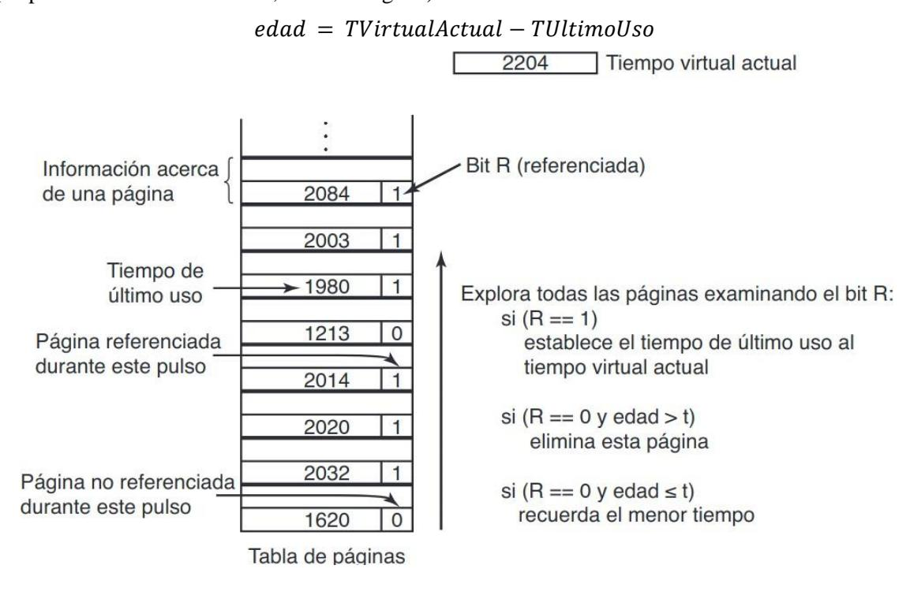
FIGURA 3.20. El algoritmo del conjunto de trabajo.
3.5.9. El algoritmo de reemplazo de páginas WSClock (Working Set Clock)
El algoritmo de reemplazo basado en WS básico es ineficiente pues implica explorar toda la TP de un proceso cada vez que se da un fallo de página. Para evitar esto, usaremos una lista circular en la que se almacenarán las entradas de la TP de las páginas que son residentes en memoria en un momento dado. En cada fallo de página, se recorre la lista observando los bits y :
- Si = 1 → la página fue usada en el último pulso de reloj, por lo que está en el WS, así que no es candidata.
-
- Se restablece el bit .
-
- Se avanza la manecilla una posición.
-
- Si = 0 → la página no fue usada en el último pulso de reloj, así que puede estar en el WS o no.
- Si < → está en el WS, así que no es candidata.
- Si > → no está en el WS, así que es candidata.
- Si = 0 → no está en el WS y tiene una copia en el disco, se selecciona para desalojar.
- Si = 1 → no está en el WS pero no tiene una copia en el disco.
-
- Se planifica la escritura en el disco.
-
- Se avanza la manecilla una posición.
-
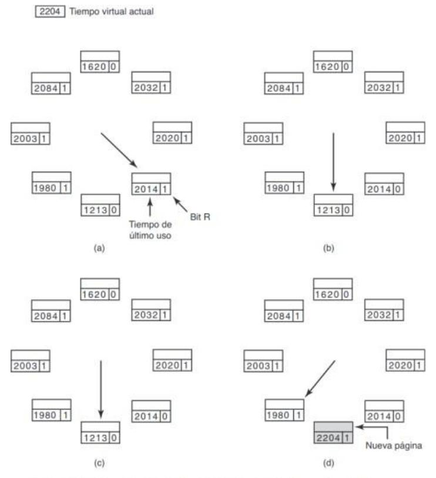
3.5.10. Resumen de los algoritmos de reemplazo de páginas
| Algoritmo | Comentario | |
|---|---|---|
| Óptimo | No se puede implementar, pero es útil como punto de comparación | |
| NRU (No usadas recientemente) | Una aproximación muy burda del LRU | |
| FIFO (primera en entrar, primera en salir) | Podría descartar páginas importantes | |
| Segunda oportunidad | Gran mejora sobre FIFO | |
| Reloj | Realista | |
| LRU (menos usadas recientemente) | Excelente, pero difícil de implementar con exactitud | |
| NFU (no utilizadas frecuentemente) | Aproximación a LRU bastante burda | |
| Envejecimiento | Algoritmo eficiente que se aproxima bien a LRU | |
| Conjunto de trabajo | Muy costoso de implementar | |
| WSClock | Algoritmo eficientemente bueno |
3.6. Cuestiones de diseño para los sistemas de paginación
3.6.1. Asignación Local contra Asignación Global
Este punto no tiene que ver con los algoritmos de reemplazo, solo con el número de marcos asignados a cada proceso.
En las políticas de asignación global el algoritmo de reemplazo siempre desalojará una página del mismo proceso que la que se está intentando cargar. Asignan a cada proceso una cantidad fija de marcos de memoria. Si en algún momento el tamaño del WS supera el número de marcos asignados, se produce sobrepaginación. Si en algún momento el tamaño del WS es menor que el número de marcos asignados se estará desperdiciando memoria principal.
En las políticas de asignación local el algoritmo de reemplazo puede desalojar una página de cualquier proceso. Asginan a cad proceso una cantidad dinámica de marcos de memoria que cambia conforme a este se ejecuta. Se pueden ajustar al tamaño del WS conforme este va cambiando. Inicialmente, se asigna a cada proceso una cantidad de marcos proporcional a su tamaño. Se garantiza un número mínimo de marcos para que los procesos muy pequeños se puedan ejecutar.
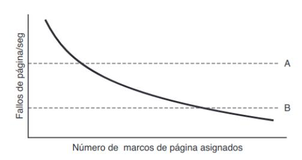
Las asignaciones aumentan o disminuyen conforme se ejecutan todos los procesos. El algoritmo PFF (frecuencia de fallos de página) es el encargado de administrar las asignaciones, indicando cuándo se deben incrementar o decrementar. La proporción de fallos disminuye conforme se asignan más páginas, así que el
PFF se basa en media el número de fallos por segundo de cada proceso. En base a esto, establece un rango aceptable de proporción de fallos en el que intenta mantener todos los procesos.
- El límite A establece una proporción de fallos demasiado alta: cuando un proceso lo sobrepasa se se incrementa su número de marcos asignados.
- El límite B establece una proporción de fallos tan baja que se puede suponer que el proceso tiene demasiada memoria: cuando un proceso lo sobrepasa se decrementa su número de marcos asignados.
Algunos algoritmos de reemplazo, como FIFO o LRU, pueden funcionar con asignación local o global. Otros, los basados en WS, sólo pueden funcionar con asignación local. Por definición, no existe un WS para todo el sistema, sólo para un proceso concreto. AL intentar definir un WS total se perdería el fundamento del WS, el principio de localidad.
3.6.2. Control de carga
Aunque se use mejor algoritmo de reemplazo y una asignación óptima de marcos, el sistema sobrepagianará si la suma de los WS de todos los procesos en ejecución es más grande que la memoria principal. Un síntoma de que ha sucedido este es que el PFF determine que algunos procesos en memoria necesitan más marcos.
La única solución es deshacerse temporalmente de algunos procesos bloqueados, intercambiándolos a disco para liberar sus marcos y que los puedan usar los que los necesitan. Si aun así el sistema sigue sobrepaginando, se volverá a hacer hasta que deje de estarlo.
Al aplicar esto se debe tener en cuenta el grado de multiprogramación, pues si el número de procesos en memoria es demasiado bajo, la CPU puede estar inactiva durante largos períodos de tiempo.
3.6.3. Tamaño de página
El tamaño de página es un parámetro que a menudo el sistema operativo puede elegir. Para determinar el mejor tamaño de página se requiere balancear varios factores competitivos. Como resultado, no hay un tamaño óptimo en general. Para empezar, hay dos factores que están a favor de un tamaño de página pequeño. Un segmento de texto, datos o pila elegido al azar no llenará un número integral de páginas. En promedio, la mitad de la página final estará vacía. El espacio adicional en esa página se desperdicia. A este desperdicio se le conoce como fragmentación interna. Con n segmentos en memoria y un tamaño de página de p bytes, se desperdiciarán np/2 bytes en fragmentación interna. Este razonamiento está a favor de un tamaño de página pequeño.
Por otro lado, tener páginas pequeñas implica que los programas necesitarán muchas páginas, lo que sugiere la necesidad de una tabla de páginas grande. Las transferencias hacia y desde el disco son por lo general de una página a la vez, y la mayor parte del tiempo se debe al retraso de búsqueda y al retraso rotacional, por lo que para transferir una página pequeña se requiere casi el mismo tiempo que para transferir una página grande.
En algunas máquinas, la tabla de páginas se debe cargar en registros de hardware cada vez que la CPU cambia de un proceso a otro. En estas máquinas, tener un tamaño pequeño de página significa que el tiempo requerido para cargar sus registros aumenta a medida que se hace más pequeña. Además, el espacio ocupado por la tabla de páginas aumenta a medida que se reduce el tamaño de las páginas.
Este último punto se puede analizar matemáticamente. Digamos que el tamaño promedio de un proceso es de s bytes y que el tamaño de página es de p bytes. Además supone que cada entrada de página requiere e bytes. El número aproximado de páginas necesarias por proceso es entonces s/p, ocupando se/p bytes de espacio en la tabla de páginas. La memoria desperdiciada en la última página del proceso debido a la fragmentación
interna es p/2. Así, la sobrecarga total debido a la tabla de páginas y a la pérdida por fragmentación interna se obtiene mediante la suma de estos dos términos:
sobrecarga =
Para obtener el tamaño óptimo de página calculamos la derivada respecto de p e igualamos a 0 obteniendo:
p=√2se
Parece coña, pero preguntó en un final de donde salía esta fórmula.
3.6.4. Espacios separados de instrucciones y de datos
Todo el rato el tanembaum lo llama segmentos, lo que es un lío tremendo porque nada tiene que ver, como veremos después hay paginación, segmentación (dónde hay segmentos) y segmentación con paginación (donde hay segmentos paginados).
En la mayoría de sistemas cada proceso tiene un único espacio de direcciones que contiene tanto instrucciones como datos. A menudo, este espacio es demasiado pequeño para contener toda esa información.
Para solucionar esto se crean dos espacios de direcciones, el espacio I (para las instrucciones) y el espacio D (para los datos). Cada uno de ellos tendrá el mismo tamaño que el original 2, por lo que se duplicará el espacio de direcciones disponible. Ambos espacios se paginan de manera independiente. Cada uno tiene su propia TP con su propia asignación de páginas a marcos.
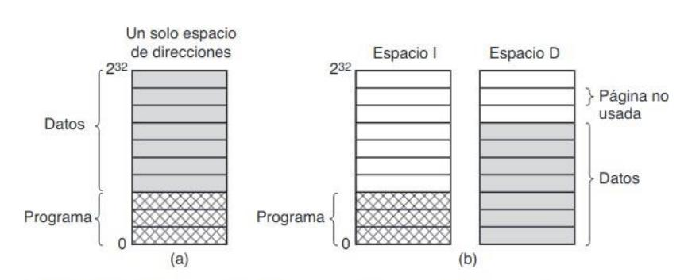
3.6.5. Páginas compartidas
Cuando varios usuarios ejecutan el mismo programa, compartir sus páginas es mucho más eficiente que tener dos copias de la misma página en memoria todo el tiempo. Compartir las páginas de código (que son sólo de lectura) es fácil:
- Si se admiten espacios de direcciones separados, los procesos con el mismo programa usarán la misma TP del espacio I y otro para la TP del espacio D. Para compartir la TP del espacio I, se hará que sus apuntadores apunten a la misma tabla.
- Si no hay espacios de direcciones separados, también se puede conseguir que dos procesos compartan las páginas de código, pero el mecanismo es más complicado.
- El problema es que al terminar o intercambiar uno de los procesos que comparten código, se retirarán todas sus páginas de memoria, provocando que el otro tenga muchos fallos de página hasta que vuelva a traer su código. Buscar en todas las TPs de todos los procesos antes de desalojar una página es muy caro, por lo que se usan estructuras de datos especiales para llevar cuenta de las páginas compartidas.
Compartir las páginas de datos (que son de lectura y escritura) es más difícil. Esto sucede en los proceso padre e hijo, que comparten tanto el código como los datos del programa.
- Cada uno tendrá su propia TP, que apuntará al mismo conjunto de páginas para evitar tener que copiarlas.
- Tan pronto como cualquiera de los dos realice alguna escritura, se hará una copia de la página en la que se escribe. Esto se conoce como copiar en escritura. Esto implica crear una página nueva.
- Así, aquellas páginas que nunca se modifican (incluyendo las del programa) no se copiarán.
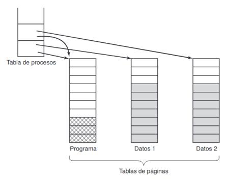
Copia en escritura:
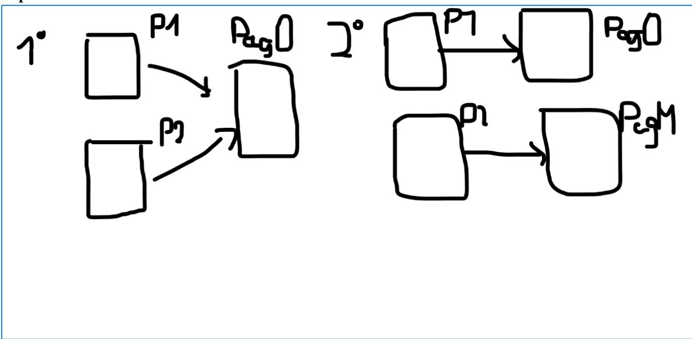
3.6.6. Bibliotecas compartidas
En los sistemas modernos hay muchas bibliotecas extensas utilizadas por muchos procesos. Se pueden enlazar a los programas que las usan de dos maneras:
Enlace estático: las funciones usadas en las bibliotecas se incluyen en tiempo de compilación en el binario ejecutable:
- Las funciones de la biblioteca que no se llaman en el programa no se incluyen.
- EL binario ejecutable contiene todo el código necesario para ejecutarse de manera independiente.
- Sin embargo, si muchos programas usan la misma biblioteca, se desperdicia mucho espacio tanto en el disco como en la memoria principal.
Enlace dinámico: durante la compilación se incluye una pequeña rutina auxiliar para enlazar las fucniones de la biblioteca al llamarlas en tiempo de ejecución.
- Las funciones de la biblioteca se cargan en memoria cuando algún programa las llama por primera vez, por lo que las no se llaman nunca no se cargan.
- Una vezalgún proceso las haya cargado, ya las pueden usar todos los demás que la tengan enlazada dinámicamente.
3.6.7. Archivos asociados
Un proceso puede emitir una llamada al sistema para asociar un archivo a una porción de su espacio de direcciones virtuales.El archivo no se carga entero al momento de la asociación, se va cargando bajo demanda. Los archivos asociados se usan como:
- Método alternativo para la E/S → en vez de realizar lecturas y escrituras se puede acceder al archivo como un array de datos en memoria.
- Canal de comunicación entre procesos → si varios procesos se asocian a la vez al mismo archivo, se pueden comunicar a través de la memoria que comparten. Las escrituras que realice uno de ellos en la memoria compartida serán inmediatamente visibles por el resto.
3.6.8. Política de limpieza
La paginación funciona mejor cuando hay muchos marcos libres que se pueden reclamar nada más ocurra un fallo. Si todos los marcos están ocupados y han sido modificados, cuando se produzca un fallo se tendrá que realizar una copia en el disco antes de cargar la página que se necesitaba.
En el tanmebaum no se entiende nada así que tras un correo el profesor explicó lo siguiente:
El demonio de paginación es un proceso que periódicamente comprueba los marcos que son usando en RAM. Si determina que está muy llena, intenta seleccionar algunos de los ocupados por alguna página de algún proceso para liberar el correspondiente marco. SI ha sido modificada tarda un cierto tiempo en liberarla porque debe escribir en el disco. La idea es evitar fallos en el futuro. Sire para actualiza en disco copias de páginas modificadas en RAM en momentos en los que no se usa el disco. La página deja de tener el bit M activado, lo que es bueno.
El algoritmo de reemplazo de páginas usando los marcos libres, si el algoritmo decide usar uno de estos liberados por el demonio, la información pasa al disco, pero mientras eso no ocurra la información sigue en la RAM y está disponible. Quitar una página no implica borrarla, su contenido sigue ahí hasta que no sea reemplazada (sobrescrita) por otra página.
Resumidamente el demonio escribe en disco paginas modificadas y el algoritmo de reemplazo ya determina que reemplazar.
3.7. Cuestiones de implementación (no entra, pero al que le interese saberlo muy bien que nosotros nos enteramos 4 días antes del final).
3.7.1. Participación del sistema operativo en la paginación
Hay cuatro ocasiones en las que el sistema operativo tiene que realizar trabajo relacionado con la paginación: al crear un proceso, al ejecutar un proceso, al ocurrir un fallo de página y al terminar un proceso.
Cuando se crea un proceso en un sistema de paginación, el sistema operativo tiene que determinar qué tan grandes serán el programa y los datos (al principio), y crear una tabla de páginas para ellos. Se debe asignar espacio en memoria para la tabla de páginas y se tiene que inicializar. La tabla de páginas no necesita estar residente cuando el proceso se intercambia hacia fuera, pero tiene que estar en memoria cuando el proceso se está ejecutando. Además, se debe asignar espacio en el área de intercambio en el disco, para que cuando se intercambie una página, tenga un lugar a donde ir. El área de intercambio también se tiene que inicializar con el texto del programa y los datos, para que cuando el nuevo proceso empiece a recibir fallos de página, las páginas se puedan traer. Algunos sistemas paginan el texto del programa directamente del archivo ejecutable, con lo cualse ahorra espacio en disco y tiempo de inicialización. Por último, la información acerca de la tabla de páginas y el área de intercambio en el disco se debe registrar en la tabla de procesos. Como dijimos anteriormente, la tabla de procesos tiene punteros a las tablas de páginas.
Cuando un proceso se planifica para ejecución, el TLB se vacía para deshacerse de los restos del proceso que se estaba ejecutando antes. La tabla de páginas del nuevo proceso se tiene que actualizar, por lo general copiándola o mediante un apuntador a éste hacia cierto(s) registro(s) de hardware. De manera opcional, algunas o todas las páginas del proceso se pueden traer a memoria para reducir el número de fallos de página al principio (por ejemplo, es evidente que será necesaria la página a la que apunta la PC).
Cuando ocurre un fallo de página, el sistema operativo tiene que leer los registros de hardware para determinar cuál dirección virtual produjo el fallo. Con base en esta información debe calcular qué página se necesita y localizarla en el disco. Después debe buscar un marco de página disponible para colocar la nueva página, desalojando alguna página anterior si es necesario.
Cuando un proceso termina, el sistema operativo debe liberar su tabla de páginas, sus páginas y el espacio en disco que ocupan las páginas cuando están en disco.
3.7.2. Manejos de fallos de página
-
- El hardware hace un trap al kernel, guardando el contador de programa en la pila. En la mayor parte de las máquinas, se guarda cierta información acerca del estado de la instrucción actual en registros especiales de la CPU.
-
- Se inicia una rutina en código ensamblador para guardar los registros generales y demás información volátil, para evitar que el sistema operativo la destruya.
-
- El sistema operativo descubre que ha ocurrido un fallo de página y trata de descubrir cuál página virtual se necesita. El sistema operativo debe obtener el contador de programa, obtener la instrucción y analizarla en software para averiguar lo que estaba haciendo cuando ocurrió el fallo.
-
- Una vez que se conoce la dirección virtual que produjo el fallo, el sistema comprueba si esta dirección es válida y si la protección es consistente con el acceso. Si la dirección es válida y no ha ocurrido un fallo de página, el sistema comprueba si hay un marco de página disponible. Si no hay marcos disponibles, se ejecuta el algoritmo de reemplazo de páginas para seleccionar una víctima.
-
- Si el marco de página seleccionado está sucio, la página se planifica para transferirla al disco y se realiza una conmutación de contexto, suspendiendo el proceso fallido y dejando que se ejecute otro hasta que se haya completado la transferencia al disco. En cualquier caso, el marco se marca como ocupado para evitar que se utilice para otro propósito.
-
- El sistema operativo busca la dirección de disco en donde se encuentra la página necesaria, y planifica una operación de disco para llevarla a memoria. Mientrasse está cargando la página, el proceso fallido sigue suspendido y se ejecuta otro proceso de usuario, si hay uno disponible.
-
- Cuando la interrupción de disco indica que la página ha llegado, las tablas de páginas se actualizan para reflejar su posición y el marco se marca como en estado normal.
-
- La instrucción fallida se respalda al estado en que tenía cuando empezó, y el contador de programa se restablece para apuntar a esa instrucción.
-
- El proceso fallido se planifica y el sistema operativo regresa a la rutina
-
- Esta rutina recarga los registros y demás información de estado, regresando al espacio de usuario para continuar la ejecución.
3.7.3. Respaldo de Instrucción
Cuando un programa hace referencia a una página que no está en memoria, la instrucción que produjo el fallo se detiene parcialmente y ocurre un trap al sistema operativo. Una vez que el sistema operativo obtiene la página necesaria, debe reiniciar la instrucción que produjo el trap. Para poder reiniciar la instrucción, el sistema operativo debe determinar en dónde se encuentra el primer byte de la instrucción.
Si en una instrucción tenemos varias referencias a memoria, con frecuencia es imposible que el sistema operativo determine sin ambigüedad en dónde empezó la instrucción. Tan mal como podría estar este problema, podría ser aún peor. Algunos modos de direccionamiento utilizan el autoincremento, lo cual significa que un efecto secundario de ejecutar la instrucción es incrementar uno o más registros. Las instrucciones que utilizan el modo de autoincremento también pueden fallar.
Por fortuna, en algunas máquinas los diseñadores de la CPU proporcionan una solución, por lo general en la forma de un registro interno oculto, en el que se copia el contador de programa justo antes de ejecutar cada instrucción. Estas máquinas también pueden tener un segundo registro que indique cuáles registros se han ya autoincrementado o autodecrementado y por cuánto. Dada esta información, el sistema operativo puede deshacer sin ambigüedad todos los efectos de la instrucción fallida, de manera que se pueda reiniciar.
3.7.4. Bloqueo de páginas en memoria
La memoria virtual y la E/S interactúan en formas sutiles. Considere un proceso que acaba de emitir una llamada al sistema para leer algún archivo o dispositivo y colocarlo en un búfer dentro de su espacio de direcciones. Mientras espera a que se complete la E/S, el proceso se suspende y se permite a otro proceso ejecutarse. Este otro proceso recibe un fallo de página.
Si el algoritmo de paginación es global, hay una pequeña probabilidad (distinta de cero) de que la página que contiene el búfer de E/S sea seleccionada para eliminarla de la memoria. Una solución a este problema es bloquear las páginas involucradas en operaciones de E/S en memoria, de manera que no se eliminen.
Bloquear una página se conoce como fijada (pinning) en la memoria. Otra solución es enviar todas las operaciones de E/S a búferes del kernel y después copiar los datos a las páginas de usuario
3.7.5. Almacén de respaldo
No hemos dicho mucho con respecto a dónde se coloca en el disco cuando se página hacia fuera de la memoria. El algoritmo más simple para asignar espacio de página en el disco es tener una partición de intercambio especial en el disco o aún mejor es tenerla en un disco separado del sistema operativo. Esta partición no tiene un sistema de archivos normal, lo cual elimina la sobrecarga de convertir desplazamientos en archivos a direcciones de bloque.
Cuando se inicia el sistema, esta partición de intercambio está vacía y se representa en memoria como una sola entrada que proporciona su origen y tamaño. Cuando se inicia el primer proceso, se reserva un trozo del área de la partición del tamaño del primer proceso y se reduce el área restante por esa cantidad. Con cada proceso está asociada la dirección de disco de su área de intercambio; es decir, en qué parte de la partición de intercambio se mantiene su imagen. Esta información se mantiene en la tabla de procesos. El cálculo la dirección en la que se va a escribir una página es simple: sólo se suma el desplazamiento de la página dentro del espacio de direcciones virtual al inicio del área de intercambio.
Con cada proceso está asociada la dirección de disco de su área de intercambio; es decir, en qué parte de la partición de intercambio se mantiene su imagen. Esta información se mantiene en la tabla de procesos. El cálculo la dirección en la que se va a escribir una página es simple: sólo se suma el desplazamiento de la página dentro del espacio de direcciones virtual al inicio del área de intercambio.
Sin embargo, este simple modelo tiene un problema: los procesos pueden incrementar su tamaño antes de empezar. En consecuencia, podría ser mejor reservar áreas de intercambio separadas para el texto, los datos y la pila, permitiendo que cada una de estas áreas consista en más de un trozo en el disco. El otro extremo es no asignar nada por adelantado y asignar espacio en el disco para cada página cuando ésta se intercambie hacia fuera de la memoria y desasignarlo cuando se vuelva a intercambiar hacia la
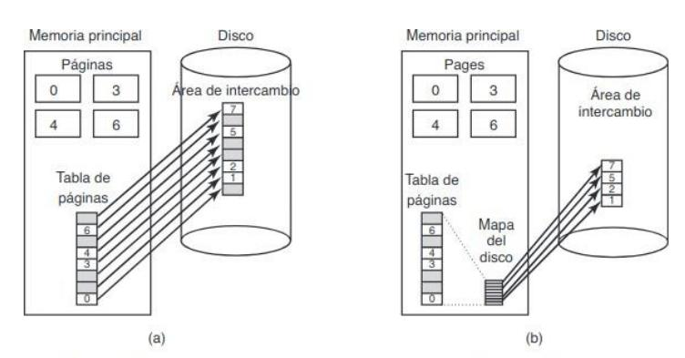
memoria. De esta forma, los procesos en memoria no acaparan espacio de intercambio.
En la figura 3.29(a) se ilustra una tabla de páginas con ocho páginas. Las páginas 0, 3, 4 y 6 están en memoria. Las páginas 1, 2, 5 y 7 están en disco. El área de intercambio en el disco es tan grande como el espacio de direcciones virtuales del proceso (ocho páginas). Una página que está en memoria siempre tiene una copia sombra en el disco, pero esta copia puede estar obsoleta si la página se modificó después de haberla cargado.
En la figura 3-29(b), las páginas no tienen direcciones fijas en el disco. Cuando se intercambia una página hacia fuera de la memoria, se selecciona una página vacía en el disco al momento y el mapa de disco (que tiene espacio para una dirección de disco por página virtual) se actualiza de manera acorde. Una página en memoria no tiene copia en el disco.
3.7.6. Separación de política y mecanismo
Una importante herramienta para administrar la complejidad de cualquier sistema es separar la política del mecanismo. Este principio se puede aplicar a la administración de la memoria, al hacer que la mayor parte del administrador de memoria se ejecute como un proceso a nivel usuario. La política se determina en gran parte mediante el paginador externo, que se ejecuta como un proceso de usuario.
Cuando se inicia un proceso, se notifica al paginador externo para poder establecer el mapa de páginas del proceso y asignar el almacenamiento de respaldo en el disco, si es necesario. A medida que el proceso se ejecuta, puede asignar nuevos objetos en su espacio de direcciones, por lo que se notifica de nuevo al paginador externo.
Una vez que el proceso empieza a ejecutarse, puede obtener un fallo de página. El manejador de fallos averigua cuál página virtual se necesita y envía un mensaje al paginador externo, indicán dole el problema. Después el paginador externo lee la página necesaria del disco y la copia a una porción de su propio espacio de direcciones. Después le indica al manejador de fallos en dónde está la página. Luego, el manejador de fallos desasigna la página del espacio de direcciones del paginador externo y pide al manejador
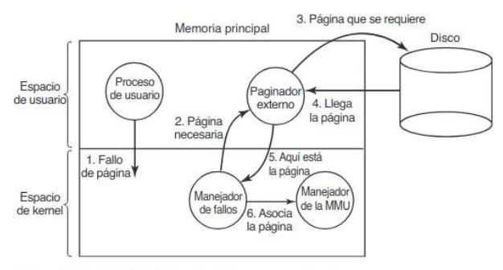
de la MMU que la coloque en el espacio de direcciones del usuario, en el lugar correcto. Entonces se puede reiniciar el proceso de usuario.
3.8. Segmentación
Hasta ahora hemos analizado una memoria virtual unidimensional en la que cada proceso tiene un único espacio de direcciones. Los espacios de direcciones se dividen en varias partes cuyo tamaño cambia durante la ejecución del proceso, de manera que a una de ellas se le asigna un determinado espacio por lo que una podría llenarse e impedir la carga de más datos mientras hay espacio libre en otras. Se necesita un método que permita liberar al programador de tener que administrar la expansión de memoria.
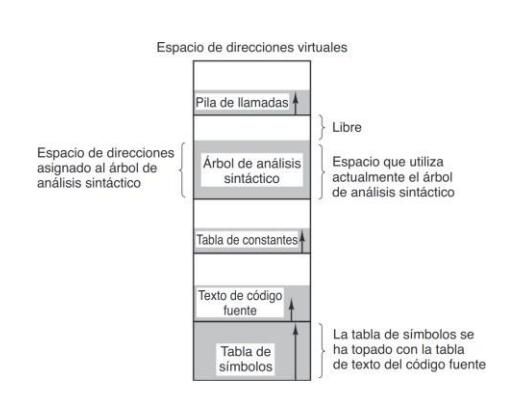
Una solución simple es usar una memoria virtual bidimensional en la que cada proceso tenga varios segmentos. Cada segmento es un espacio de direcciones, es decir, una secuencia lineal de direcciones desde 0 a un máximo, completamente independiente de los demás. La longitud de cada segmento puede ser cualquier valor entre 0 y el máximo. Distintos segmentos pueden (y suelen) tener distintas longitudes. La longitud de cada segmento puede cambiar
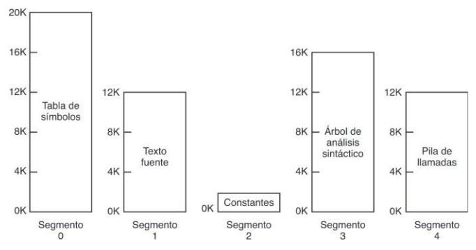
durante la ejecución del proceso. Como cada segmento es un espacio de direcciones, puede crecer o decrecer sin afectar al resto.
Los segmentos son unidades lógicas de las que el programador es consciente. Un segmento puede contener un procedimiento, un array, una pila, etc., pero normalmente no contendrá una mezcla de estas cosas. Las direcciones de la memoria bidimensional se dividen en dos partes, el número de segmento y la dirección dentro del segmento.
Ventajas:
- Simplifica la administración de la expansión de la memoria
- Permite vincular procesos más eficientemente: si cada procedimiento está en su propio segmento, cuando se modifique alguno y se vuelva a compilar de manera que su longitud cambie, este no afectará a las invocaciones a otros, pues no modificará sus direcciones iniciales.
- Facilita la compartición de procedimientos, datos o bibliotecas entre procesos: se colocan en un segmento al que acceden todos los procesos que los comparten.
- Cada segmento tiene su tipo de protección: como en un segmento no se mezclarán datos con código, se asegura que los permisos sean los adecuados. En un sistema paginado no se puede garantizar que no se mezclan.
Inconvenientes:
- Conforme se cargan y retiran segmentos en memoria, irá apareciendo huecos demasiado pequeños para que quepan la mayoría de segmentos, es decir, aparece fragmentación externa, se desperdicia memoria. Se soluciona mediante la compactación de todos los huecos pequeños en uno grande.
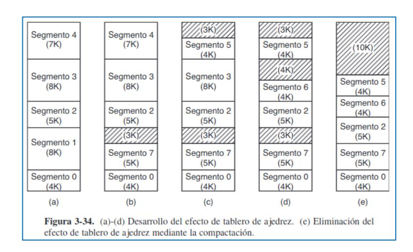
3.8.1. Comparación de la paginación y la segmentación
La principal diferencia entre la paginación y la segmentación es que las páginas tienen un tamaño fijo y los segmentos no.
| Paginación | Segmentación | ||
|---|---|---|---|
| ¿Por qué se inventó esta técnica? | Para obtener un espacio de direcciones lineales grande independientemente del tamaño de la memoria física. Para permitir que los programas y datos se divies de direcciones lógicamente independ ayudando a la compartición y protección | ||
| ¿Necesita el programador ser consciente de que se está usando esta técnica? |
No | Sí | |
| ¿Cuántos espacios de direcciones lineales hay? | 1 por proceso | Tantos como segmentos | |
| ¿Puede el espacio de direcciones total exceder el tamaño de la memoria física? |
Sí | ||
| ¿Pueden los procedimientos y datos diferenciarse y protegerse por separado? |
No | Sí | |
| ¿Se facilita la compartición de procedimientos entre usuarios? |
No | Sí | |
| ¿Pueden las tablas de tamaño cambiante acomodarse con facilidad? |
No | Sí |
3.8.2. Segmentación con Paginación
Si los segmentos son extensos, puede ser muy difícil (o imposible) mantenerlos en la memoria principal. Para solucionar esto, se usa la segmentación con paginación, en la que cada segmento se comportará como una memoria virtual paginada. Así, sólo las páginas que se necesiten de cada segmento estarán en memoria principal. Pretende combinar las ventajas de la segmentación explicadas antes con las de la paginación (el tamaño de página es uniforme y no hay que mantener el segmento en memoria, sólo la parte de él que se usa).
Cada proceso tendrá una tabla de segmentos, con un descriptor (entrada) por cada uno de sus segmentos. Como podría tener muchísimas entradas, la tabla de segmentos (TS) será también un segmento y como tal, estará paginada.
Un descriptor de un segmento indica si este está en memoria principal o no. Se considera que un segmento
está en memoria si cualquiera de sus páginaslo está. Si un segmento está en memoria, su TP estará en memoria también. Se produce un fallo de segmento cuando la TP del segmento no está en memoria. Un descriptor en una TS estará formado por:
- Dirección en memoria principal de la TP del segmento.
- Longitud del segmento.
- Bits de protección del segmento
- Otros bits.
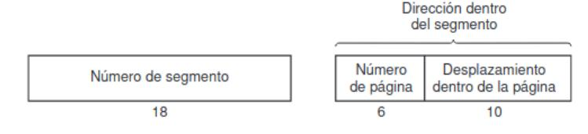
Las direcciones de memoria con segmentación paginada se dividen en número de segmento, direcciones dentro del segmento (número de página, desplazamiento en página). Cada segmento tiene su propia tabla de páginas (si es multinivel
TRADUCCIÓN:
- Se observa el número de segmento para encontrar su descriptor en la TS.
- Se comprueba si la TP del segmento está en memoria. Si no lo está, se produce fallo de segmento. Si lo está, se continúa.
- Se observa el número de página para encontrar su entrada en la TP. Si la página no está en memoria, se produce un fallo de página. Si lo está se continua.
- Se le suma el desplazamiento al marco de página.
- Se realiza el acceso a memoria
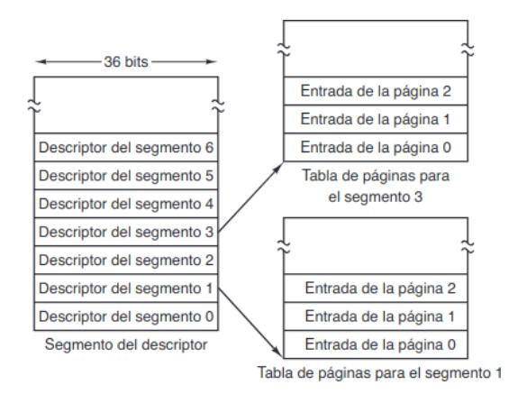
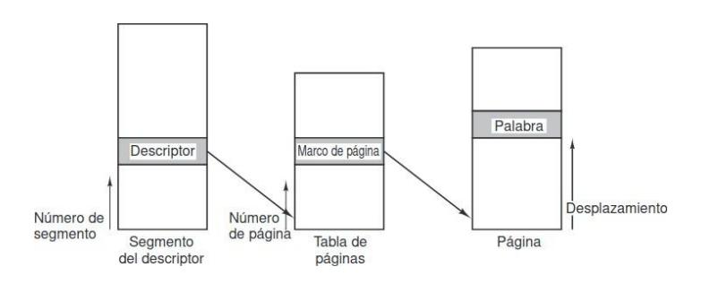
3.9 Mapa de memoria de un proceso
No aparece en el tanembaum pero es importante saberlo.
Todos los procesos tienen asignado un espacio de direcciones lógicas o virtuales. El sistema operativo debe ubicar en dicho espacio las diferentes regiones en las que un proceso estructura su memoria: un área para el código, otra(s) para datos, otra para la pila, ... Esta colección de regiones, cada una con sus propiedades, define el mapa de memoria de un proceso, es decir, la estructura de su espacio de direcciones lógico.
| 64b3250ef000-64b3250f0000 rp 00000000 103:04 12584775 | /home/adriangl/Escritorio/SOI/Practica5/Ejercicio1 |
|---|---|
| 34t 3250f0000-64b3250f1000 r-xp 00001000 103:04 12584775 | /home/adriangl/Escritorio/SOI/Practica5/Ejercicio1 |
| 4b3250f1000-64b3250f2000 rp 00002000 103:04 12584775 | /nome/adriangl/Escritorio/SUI/Practicas/Ejercicio1 |
| 4h3250f2000-64h3250f3000 rp 00002000 103:04 12584775 | /home/adriangl/Escritorio/SOT/Practica5/Fiercicio1 |
| 4b3250f3000-64b3250f4000 rw-p 00003000 103:04 12584775 | /home/adrianql/Escritorio/SOI/Practica5/Ejercicio1 |
| 4b325924000-64b325945000 rw-p 00000000 00:00 0 | [heap] |
| f3d81e00000-7f3d81e28000 rp 00000000 103:04 5782528 | /usr/lib/x86_64-linux-gnu/libc.so.6 |
| f3d81e28000-7f3d81fb0000 r-xp 00028000 103:04 5782528 | /usr/lib/x86_64-linux-gnu/libc.so.6 |
| f3d81fb0000-7f3d81fff000 rp 001b0000 103:04 5782528 | /usr/lib/x86_64-linux-gnu/libc.so.6 |
| f3d81fff000-7f3d82003000 rp 001fe000 103:04 5782528 | /usr/lib/x86_64-linux-gnu/libc.so.6 |
| f3d82003000-7f3d82005000 rw-p 00202000 103:04 5782528 | /usr/lib/x86_64-linux-gnu/libc.so.6 |
| f3d82005000-7f3d82012000 rw-p 00000000 00:00 0 | |
| f3d8218a000-7f3d8218d000 rw-p 00000000 00:00 0 | |
| f3d821a0000-7f3d821a2000 rw-p 00000000 00:00 0 | |
| f3d821a2000-7f3d821a3000 rp 00000000 103:04 5782340 | /usr/lib/x86_64-linux-gnu/ld-linux-x86-64.so.2 |
| f3d821a3000-7f3d821ce000 r-xp 00001000 103:04 5782340 | /usr/lib/x86_64-linux-gnu/ld-linux-x86-64.so.2 |
| f3d821ce000-7f3d821d8000 rp 0002c000 103:04 5782340 | /usr/lib/x86_64-linux-gnu/ld-linux-x86-64.so.2 |
| f3d821d8000-7f3d821da000 rp 00036000 103:04 5782340 | /usr/lib/x86_64-linux-gnu/ld-linux-x86-64.so.2 |
| f3d821da000-7f3d821dc000 rw-p 00038000 103:04 5782340 | /usr/lib/x86 64-linux-qnu/ld-linux-x86-64.so.2 |
| ffc74968000-7ffc74989000 rw-p 00000000 00:00 0 | [stack] |
| TTC/49de000-/TTC/49e2000 rp 00000000 00:00 0 | [ʌʌsu] |
| ffc749e2000-7ffc749e4000 r-xp 00000000 00:00 0 | [vdso] |
| fffffffff600000-fffffffff601000xp 00000000 00:00 0 | [vsyscall] |
1. Primera fila:
Contiene el segmento de texto, que corresponde al código ejecutable respaldado por el archivo binario.
2. Segunda fila:
Representa las variables globales inicializadas.
3. Área azul (Heap):
Es la zona destinada a la memoria dinámica.
4. Archivos .so:
Son Shared Objects, es decir, librerías dinámicas compartidas.
5. Área verde (Stack):
Corresponde al espacio donde se gestiona la memoria de la pila.
6. VDSO:
Es la sección proporcionada por el sistema operativo, conocida como Virtual Dynamic Shared Object.
Además, si nos fijamos estos bloques de direcciones contiguas acaban en 000, eso se debe a que abarcan varias páginas y obviamente estas páginas ocupan potencia entera de 2, si se razona en papel seguro que ya lo entendéis (esto lo preguntó en un final). Recomiendo que usando un tamaño de página de 4Kb miréis en que dirección empezáis y en cual acabáis y van a acabar todas en 000.
3.9.1 Librerías
Enlace estático: El fichero ejecutable incluye todo el código que necesita la aplicación, es decir, el código propio más el de las funciones externas que necesita. el ejecutable es autocontenido.
En el caso de que se disponga de dos versiones de la misma biblioteca, estática y dinámica, hay que usar la opción -static del compilador. La orden de compilación tendría la forma:
gcc programa.c -static -lXYZ -o programa
donde -lXYZ indica utilizar la librería libXYZ. Por ejemplo, -lm para utilizar la librería libm (librería matemática).
• Enlace dinámico implícito: La carga y el montaje de la biblioteca se lleva a cabo en tiempo de ejecución del proceso, y por tanto no se incluye explícitamente en el fichero ejecutable. Es por tanto en tiempo de ejecución cuando se han de resolver las referencias del programa a constantes y funciones (símbolos) de la
biblioteca y la reubicación de regiones. Esta es la opción por defecto del compilador (si no se especifica lo contrario) ya que busca en primer lugar la versión dinámica de la biblioteca. La orden de compilación sería como la anterior, pero sin la opción -static:
gcc programa.c -lXYZ -o programa
Los mapas de memoria resultantes de un programa serán diferentes si utiliza una función que se encuentra dentro de una biblioteca, por ejemplo, la función cos(), sin() sqrt(), ... de la biblioteca matemática, al compilarlo de forma que enlace la librería de forma estática o de forma dinámica implícita. También los tamaños de los ejecutables serán distintos, mayor para la compilación Estática.
3.9.2 Procesos hijos
La llamada al sistema fork() crea un nuevo proceso hijo cuyo mapa de memoria será una réplica exacta del mapa del proceso padre. Por su parte, la llamada al sistema exec() reemplaza la imagen de memoria del proceso por la del fichero ejecutable que se especifique, con lo que el mapa de memoria también Cambiará.
3.9.3 Proceso con archivo proyectado
Se pueden proyectar/mapear archivos en el mapa de memoria de procesos. Para ello el sistema operativo hace corresponder una zona del mapa de memoria del proceso con el archivo, siendo una copia idéntica del contenido de los bloques de dicho archivo en disco. Una vez que el archivo está proyectado, acceder a él es más rápido que a disco, ya que no son necesarias llamadas al sistema.
3.10 Cosas importantes de este Tema
En general todo es importante, de los algoritmos sobre todo el WorkingSet. De memoria virtual todo, especialmente las tablas de páginas multinivel identificar cuantos bits se necesitan para cada campo de la dirección virtual, saber cómo funciona la TLB y en general sabérselo todo bastante bien que un 50% del final lo saca de este tema.